<!doctype html>
<html lang="en">
<head>
  <meta charset="utf-8">
  <meta name="viewport" content="width=device-width, initial-scale=1">
  <title>arxiv digest — 2026-06-04</title>
  <style>
:root {
  --bg: #ffffff;
  --fg: #1f2328;
  --muted: #59636e;
  --border: #d0d7de;
  --card: #f6f8fa;
  --link: #0969da;
}
body {
  max-width: 980px;
  margin: 0 auto;
  padding: 2rem 1rem 5rem;
  font-family: -apple-system, BlinkMacSystemFont, "Segoe UI", Helvetica, Arial, sans-serif;
  line-height: 1.55;
  color: var(--fg);
  background: var(--bg);
}
a { color: var(--link); }
img { max-width: 100%; height: auto; }
pre, code { background: var(--card); border-radius: 6px; }
pre { padding: 1rem; overflow-x: auto; }
blockquote { border-left: 4px solid var(--border); padding-left: 1rem; color: var(--muted); }
details { margin: 0.6rem 0; }
summary { cursor: pointer; font-weight: 600; }
.paper-figures-scroll {
  display: flex;
  gap: 1rem;
  overflow-x: auto;
  overscroll-behavior-x: contain;
  padding: 0.75rem 0.25rem 1rem;
  margin: 1rem 0 1.25rem;
  border-top: 1px solid var(--border);
  border-bottom: 1px solid var(--border);
  scroll-snap-type: x proximity;
}
.paper-figure-card {
  flex: 0 0 min(260px, 72vw);
  scroll-snap-align: start;
  background: var(--card);
  border: 1px solid var(--border);
  border-radius: 12px;
  padding: 0.55rem;
}
.paper-figure-card img {
  display: block;
  width: 100%;
  max-height: 240px;
  object-fit: contain;
  background: white;
  border-radius: 8px;
}
.paper-figure-caption {
  display: block;
  margin-top: 0.5rem;
  color: var(--muted);
  font-size: 0.85rem;
}
.figure-strip-hint {
  color: var(--muted);
  font-size: 0.9rem;
  margin-bottom: -0.3rem;
}
</style>
  <!-- MathJax: renders $...$ inline math and $$...$$ display math, plus
       \(...\) and \[...\]. Loaded from the official CDN; works offline
       once cached. Configured to skip code/pre blocks so arxiv IDs that
       look like dollar amounts don't get mangled. -->
  <script>
    window.MathJax = {
      tex: {
        inlineMath: [['$', '$'], ['\\(', '\\)']],
        displayMath: [['$$', '$$'], ['\\[', '\\]']],
        processEscapes: true,
        processEnvironments: true
      },
      options: {
        skipHtmlTags: ['script', 'noscript', 'style', 'textarea', 'pre', 'code'],
        ignoreHtmlClass: 'tex2jax_ignore',
        processHtmlClass: 'tex2jax_process'
      }
    };
  </script>
  <script id="MathJax-script" async
    src="https://cdn.jsdelivr.net/npm/mathjax@3/es5/tex-chtml.js"></script>
</head>
<body>
<header style="background-color: #333; color: white; padding: 15px; margin-bottom: 20px;">
  <h1 style="margin: 0; font-size: 24px;">
    <a href="https://ochelpan.github.io/arXiv_clean/" style="color: white; text-decoration: none;">Main</a>
  </h1>
</header>

<h1>Daily arXiv Report</h1>

<hr>
<p>
<a href="index.html">← Index</a>
 · <a href="papers_01.html">← Previous</a> · <a href="papers_03.html">Next →</a>
</p>
<hr>

<h2>Papers 21–40</h2>
<p><a id="paper-2606.04961"></a></p>
<h3 id="theory-of-frozen-flux-in-a-narrow-uniform-superconducting-strip-after-cooling-in-a-small-magnetic-field"><a href="http://arxiv.org/abs/2606.04961v1">Theory of frozen flux in a narrow uniform superconducting strip after cooling in a small magnetic field</a></h3>
<p><strong>Authors:</strong> Alexei E. Koshelev<br>
<strong>Type:</strong> theory · <strong>Category:</strong> statistical mechanics · <strong>PDF:</strong> <a href="https://arxiv.org/pdf/2606.04961v1">https://arxiv.org/pdf/2606.04961v1</a><br>
<strong>Analysis basis:</strong> full PDF text, analyzed in chunks
<strong>Topic relevance:</strong> <code>driven-dissipative phase transition</code> <strong>3/5</strong> · <code>non-equilibrium dynamics</code> <strong>3/5</strong> · <code>non-equilibrium universality</code> <strong>3/5</strong> · <code>Keldysh / 2PI / non-Gaussian methods</code> <strong>2/5</strong> · <code>methods for driven-dissipative</code> <strong>2/5</strong> · <code>Frenkel-Kontorova</code> <strong>1/5</strong> · <code>Kondo &amp; dissipative impurity</code> <strong>1/5</strong> · <code>analog quantum simulation</code> <strong>1/5</strong> · <code>correlated / nonlocal dissipation</code> <strong>1/5</strong> · <code>scars &amp; prethermalization</code> <strong>1/5</strong></p>
<div class="figure-strip-hint">↔ Scroll figures horizontally</div>
<div class="paper-figures-scroll">
<figure class="paper-figure-card">
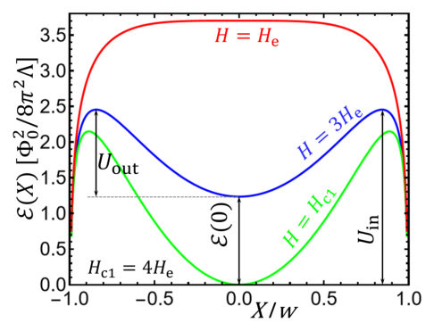
<figcaption class="paper-figure-caption"><b>Fig 1.</b> FIG. 1. Representative vortex energy profiles for a narrow strip, Eq. (4), for three magnetic fields, He, 3He, and Hc1 assuming the relation Hc1 = 4He. In the curve for H = 3He, the definitions of the exit and entry barriers, Uout and Uin are illustrated.</figcaption>
</figure>
<figure class="paper-figure-card">
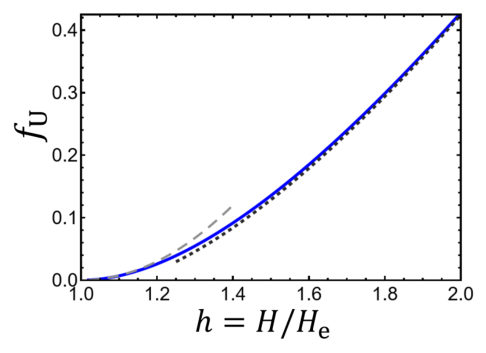
<figcaption class="paper-figure-caption"><b>Fig 2.</b> FIG. 2. Plot of the function fU(h) determining the escape barrier Uout in Eq. (9) defined by Eqs. (10) and (11). The gray long-dashed line shows the asymptotics for h →1 in Eq. (13). The dark gray short-dashed line shows the asymptotics for h ≫1 in Eq. (14).</figcaption>
</figure>
<figure class="paper-figure-card">
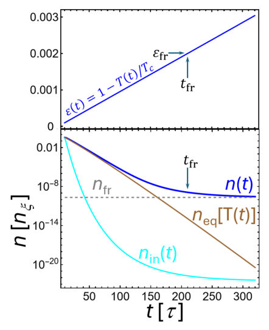
<figcaption class="paper-figure-caption"><b>Fig 3.</b> FIG. 3. The illustrative time evolution of the flux density n(t) during cooling with constant rate following from Eqs. (22) and (23) (blue curve in the bottom plot). The top plot illustrates the corresponding time dependence of the reduced tempera- ture ε(t). For comparison, we also show by the brown line the equilibrium density at the current temperature neq[T(t)], Eq. (17), and the first term in Eq. (22) nin(t) due to the ini- tial condition (cyan line). The arrow marks the location of the freezing time scale tfr = 2tm, where tm is determined by Eq. (26).</figcaption>
</figure>
<figure class="paper-figure-card">
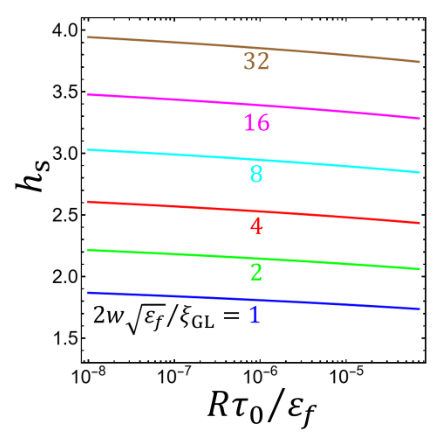
<figcaption class="paper-figure-caption"><b>Fig 4.</b> FIG. 4. The dependences of the reduced crossover magnetic field hs =Hs/He limiting the single-vortex regime of freezing, Eq. (36), on the reduced cooling rate Rτ0/εf for different values of the ratio 2w√εf/ξGL.</figcaption>
</figure>
<figure class="paper-figure-card">
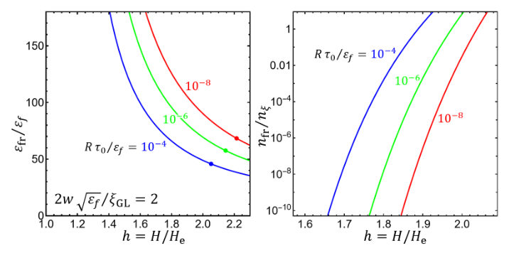
<figcaption class="paper-figure-caption"><b>Fig 5.</b> FIG. 5. Representative dependences of the reduced freezing temperature εfr and the frozen flux density nfr on the magnetic field in units of the flux-expulsion field for 2w√εf/ξGL = 2 and several values of the normalized cooling rate Rτ0/εf. The circles in the left plot mark the locations of the field hs limiting the single-vortex freezing regime, see Eq. (36) and Fig. 4.</figcaption>
</figure>
</div>

<p><strong>Summary.</strong> This theoretical work models how magnetic flux gets trapped (frozen) in narrow superconducting strips during cooling. By solving the dynamic-balance equation for vortex movement, the authors predict the freezing temperature and the resulting trapped flux density. This provides a quantitative understanding of flux pinning relevant to superconducting electronics.</p>
<p><strong>Why it may be interesting.</strong> The study of flux freezing and dynamic equilibrium in superconductors involves non-equilibrium statistical mechanics, critical slowing down, and barrier crossing phenomena, which share mathematical structures with open quantum systems dynamics.</p>
<details>
<summary>Detailed structure</summary>
<p><strong>Main problem.</strong> The paper analyzes the phenomenon of residual frozen magnetic flux trapped in a narrow superconducting strip when cooled through its critical temperature in a small external magnetic field.</p>
<p><strong>Main result.</strong> The freezing process is governed by a dynamic balance equation, yielding a freezing temperature ($T_{	ext{fr}}$) and a frozen flux density ($n_{	ext{fr}}$) that exhibit strong, predictable dependencies on the magnetic field and cooling rate.</p>
<p><strong>Method.</strong> The authors derive and solve the dynamic-balance equation describing the thermally-activated escape and entrance of vortices over geometric energy barriers.</p>
<p><strong>Model / system.</strong> The system is a long, narrow superconducting strip ($W \ll \Lambda$). The dynamics are modeled using vortex energy profiles and the master equation for flux density evolution.</p>
<p><strong>Key observables.</strong> Frozen flux density ($n_{	ext{fr}}$), freezing temperature ($T_{	ext{fr}}$), and the effective flux-expulsion magnetic field ($H_{	ext{eff}}$).</p>
<p><strong>Important parameters / regimes.</strong> The relative freezing temperature ($\epsilon_{	ext{fr}} = 1 - T_{	ext{fr}}/T_c$), the cooling rate ($R$), and characteristic energy scales like the Pearl energy ($E_P$) and the minimum flux-expulsion field ($H_e$).</p>
<p><strong>Assumptions / limitations.</strong> The analysis relies on the narrow-strip approximation ($W \ll \Lambda$) and assumes the system freezes in regimes where thermal activation dominates the dynamics.</p>
<p><strong>Figures summary.</strong> Figures illustrate vortex energy profiles, the reduced function determining the escape barrier, and the time evolution of the flux density during cooling.</p>
<p><strong>Paper structure.</strong> The paper progresses from establishing the physical problem (flux trapping) to deriving the dynamic-balance equation, solving it asymptotically, and finally calculating the quantitative dependence of the freezing temperature and density on external parameters.</p>
</details>
<details>
<summary>Abstract</summary>
<p>We analyze residual frozen flux in a long narrow superconducting strip cooled through its transition temperature $T_{c}$ in a small perpendicular magnetic field. This problem is relevant for the issue of trapped magnetic flux in superconducting electronic devices. During cooling, the low-temperature vortex configuration is formed at temperatures very close to $T_{c}$, where the flux density is determined by dynamic balance between the thermally-activated exits and entries of vortices over the geometrical energy barrier formed by the interaction with the strip edges and the Meissner screening current. In the field range between the minimum flux-expulsion field and the penetration field, the equilibrium flux density is finite due to thermal activation and rapidly decreases with decreasing temperature. During cooling, however, the escape rate decreases exponentially, and the vortex density falls out of equilibrium at a field-dependent freezing temperature $T_{\mathrm{fr}}$. We derive and solve the dynamic-balance equation for this process, which yields definite quantitative results for $T_{\mathrm{fr}}$ and the frozen vortex density. The relative freezing temperature $1\!-\!T_{\mathrm{fr}}/T_{c}$ exceeds the fluctuation width of the transition by a large logarithmic factor, rapidly increases when the magnetic field approaches the minimum flux-expulsion field, and logarithmically increases with decreasing cooling rate. The resulting frozen flux density has a very strong magnetic-field dependence which can be used to define the effective flux-expulsion magnetic field.</p>
</details>
<p><sub><a href="#top">↑ back to top</a></sub></p>

<p><a id="paper-2606.05083"></a></p>
<h3 id="squeezed-phonon-lasing-via-floquet-controlled-solid-state-defects"><a href="http://arxiv.org/abs/2606.05083v1">Squeezed Phonon Lasing via Floquet-Controlled Solid-State Defects</a></h3>
<p><strong>Authors:</strong> Hugo Molinares, Gianluca Rastelli, Victor Montenegro, Vitalie Eremeev<br>
<strong>Type:</strong> theory · <strong>Category:</strong> other · <strong>PDF:</strong> <a href="https://arxiv.org/pdf/2606.05083v1">https://arxiv.org/pdf/2606.05083v1</a><br>
<strong>Analysis basis:</strong> full PDF text, analyzed in chunks
<strong>Topic relevance:</strong> <code>driven-dissipative phase transition</code> <strong>3/5</strong> · <code>methods for driven-dissipative</code> <strong>3/5</strong> · <code>non-equilibrium dynamics</code> <strong>3/5</strong> · <code>spintronics-quantum-optics interface</code> <strong>3/5</strong> · <code>Keldysh / 2PI / non-Gaussian methods</code> <strong>1/5</strong> · <code>analog quantum simulation</code> <strong>1/5</strong> · <code>correlated / nonlocal dissipation</code> <strong>1/5</strong> · <code>non-equilibrium universality</code> <strong>1/5</strong></p>
<div class="figure-strip-hint">↔ Scroll figures horizontally</div>
<div class="paper-figures-scroll">
<figure class="paper-figure-card">
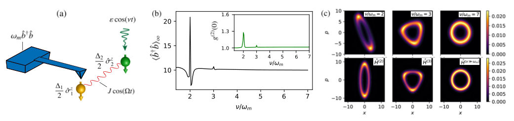
<figcaption class="paper-figure-caption"><b>Fig 1.</b> FIG. 1. (a) The basic element of our theoretical proposal is a mechanical oscillator coupled to a spin, which interacts with a second spin via a driven spin-spin coupling, see Eq. (1). ωm is the mechanical oscillator frequency whereas ∆1, ∆2 are the energy splitting of the two spins. A local periodic drive is applied to the second spin at frequency ν whereas the spin-spin interaction is modulated at frequency Ω. (b) Numerical solutions of Eq. (2): Steady-state average phonon number ⟨ˆb†ˆb⟩∞as a function of ν/ωm, for the resonance condition Ω= ∆1 + ∆2 + ωm. Inset plot: Second-order correlation function. (c) Wigner function W(x, p) for selected values of ν/ωm with ε = ν/2. Top panel:...</figcaption>
</figure>
<figure class="paper-figure-card">
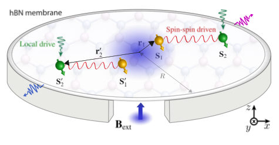
<figcaption class="paper-figure-caption"><b>Fig 2.</b> FIG. 2. Scheme for the proposed setup: A suspended circular hBN membrane with radius R acts as the mechanical resonator. A mag- netic field gradient enables spin-motion coupling with spins placed at r1(r′ 1) (yellow spheres), each interacting with a second spin placed at r2(r′ 2) (green spheres) via a driven spin-spin coupling. A local pe- riodic drive is applied to the second spins.</figcaption>
</figure>
<figure class="paper-figure-card">
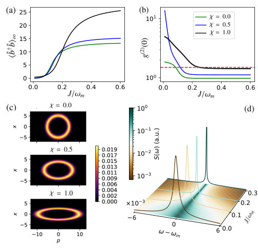
<figcaption class="paper-figure-caption"><b>Fig 3.</b> FIG. 3. Steady-state solution of ME in Eq. (11): (a) Average phonon number ⟨ˆb†ˆb⟩∞and (b) second-order correlation function as a func- tion of amplitude driving field J/ωm, for different χ values. (c) Wigner representation W(x, p) at J = 0.3. (d) Power spectrum S (ω) as a function of J/ωm. Frequency defined with respect to the MO fre- quency ωm for χ = 1. Other parameters (in units of ωm): λ1 = 0.04, ν = ν′ = 2, Γj = 0.03, γm = 10−4, γ′ m = 10γm, ¯ns j = 10−5, ¯nm = 10−3.</figcaption>
</figure>
<figure class="paper-figure-card">
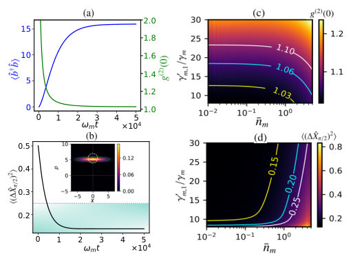
<figcaption class="paper-figure-caption"><b>Fig 4.</b> FIG. 4. Numerical solution of ME in Eq. (16): (a) Time evolution of excitations and second-order correlation function, g(2)(0). (b) Time evolution of quadrature fluctuation ⟨(∆ˆXπ/2)2⟩, i.e. θ = π/2. Inset plot: Wigner function W(x, p) at t →∞. The green dashed lines in- dicate the contour at 0.1 max[W(x, p)], while the white dashed lines correspond to the same contour for a coherent field with identical coherent amplitude for θ = π/2. (c) g(2)(0) and (d) ⟨(∆ˆXπ/2)2⟩as a function of the ratio γ′ m,1/γm and the MO thermal excitations ¯nm. Here, we observe that the optimal regime for squeezed phonon las- ing is achieved around γ′ m,1/γm ∼10 and for ¯nm ≲1. Parameters (in units of ωm): J =...</figcaption>
</figure>
</div>

<p><strong>Summary.</strong> This paper presents a theoretical framework for achieving squeezed phonon lasing in solid-state defects within hBN membranes using Floquet engineering. By carefully controlling the system's driving fields and coupling mechanisms, the authors demonstrate a pathway to stabilize the phase and generate robust, non-classical mechanical states. This offers a promising route for quantum metrology applications.</p>
<p><strong>Why it may be interesting.</strong> This work is highly relevant as it combines several advanced topics: Floquet engineering for quantum control, solid-state quantum emitters, and the generation of non-classical states (squeezing) in mechanical oscillators, which are core areas of AMO physics and quantum optics.</p>
<details>
<summary>Detailed structure</summary>
<p><strong>Main problem.</strong> The paper proposes a general Floquet-engineered scheme to achieve a continuous transition from conventional phonon lasing to phase-locked squeezed phonon lasing.</p>
<p><strong>Main result.</strong> The scheme successfully demonstrates the realization of stable, steady-state squeezed phonon lasing in a solid-state platform by controlling the system's phase and quadrature fluctuations.</p>
<p><strong>Method.</strong> The analysis relies on deriving effective Hamiltonians using Floquet theory and the Magnus expansion, followed by solving the resulting Master Equation to characterize steady-state dynamics.</p>
<p><strong>Model / system.</strong> The physical system is a solid-state platform using color centers embedded in a hexagonal boron nitride (hBN) membrane, coupling a mechanical oscillator (phonons) to two principal and ancillary spins. The dynamics are governed by a complex Hamiltonian incorporating time-periodic driving terms.</p>
<p><strong>Key observables.</strong> Lasing threshold, mechanical occupation ($\langle\hat{b}^\dagger\hat{b}
angle_\infty$), second-order correlation function ($g^{(2)}(0)$), and the variance of generalized quadrature operators ($\langle(\Delta \hat{X}_	heta)^2
angle$).</p>
<p><strong>Important parameters / regimes.</strong> Resonance conditions ($\Omega = \sum \Delta_j + \omega_m$), local driving frequencies ($
u$), and coupling strengths ($\lambda_1, J, \epsilon$).</p>
<p><strong>Assumptions / limitations.</strong> The analysis utilizes approximations such as the Rotating-Wave Approximation (RWA), adiabatic elimination of fast-decaying ancilla spins, and specific parameter hierarchies to simplify the effective Hamiltonian.</p>
<p><strong>Figures summary.</strong> Figures illustrate the time evolution of $g^{(2)}(0)$ and quadrature variance, showing convergence to values characteristic of lasing and squeezing, respectively. Wigner functions are used to visualize the transition to squeezed states.</p>
<p><strong>Paper structure.</strong> The paper builds from a general theoretical proposal (Section II) to the specific application on the hBN platform (Section III), detailing the derivation of effective Hamiltonians for both squeezed amplification and phase-locked regimes.</p>
</details>
<details>
<summary>Abstract</summary>
<p>We propose a general Floquet-engineered scheme for phonon lasing that enables a continuous transition from conventional lasing to phase-locked squeezed phonon lasing. Focusing on a solid-state platform based on color centers embedded in a circular hexagonal boron nitride (hBN) membrane, we demonstrate that a mechanical oscillator coupled to principal and ancilla spins, and controlled via effective Floquet driving simultaneously exhibits squeezed-state amplification and cooling dynamics, leading to the emergence of a stable squeezed phonon laser. We analyse the steady-state properties of the system, including the lasing threshold, mechanical occupation, emission spectrum and second-order correlations. Furthermore, we show that Floquet engineering can realize phase-locked lasing while enabling controlled quadrature squeezing, thereby providing a simple yet effective route toward squeezed lasing in quantum mechanical systems. Our results offer new insights into the generation of squeezed phonon lasers in solid-state platforms, with potential applications in quantum metrology.</p>
</details>
<p><sub><a href="#top">↑ back to top</a></sub></p>

<p><a id="paper-2606.04608"></a></p>
<h3 id="correlated-states-in-quantum-dot-clusters-coupled-to-a-common-superconductor"><a href="http://arxiv.org/abs/2606.04608v1">Correlated States in Quantum Dot Clusters Coupled to a Common Superconductor</a></h3>
<p><strong>Authors:</strong> Martin Žonda, Jakub Rękas, Tobiáš Poláček, Jana Kodrlová, Vladislav Pokorný, Martin Friák<br>
<strong>Type:</strong> theory · <strong>Category:</strong> strongly correlated electrons · <strong>PDF:</strong> <a href="https://arxiv.org/pdf/2606.04608v1">https://arxiv.org/pdf/2606.04608v1</a><br>
<strong>Analysis basis:</strong> full PDF text, analyzed in chunks
<strong>Topic relevance:</strong> <code>analog quantum simulation</code> <strong>3/5</strong> · <code>entanglement &amp; information structure</code> <strong>3/5</strong> · <code>methods for driven-dissipative</code> <strong>3/5</strong> · <code>Keldysh / 2PI / non-Gaussian methods</code> <strong>2/5</strong> · <code>Kondo &amp; dissipative impurity</code> <strong>2/5</strong> · <code>correlated cavity matter</code> <strong>1/5</strong> · <code>exotic spin models in light-matter</code> <strong>1/5</strong></p>
<div class="figure-strip-hint">↔ Scroll figures horizontally</div>
<div class="paper-figures-scroll">
<figure class="paper-figure-card">
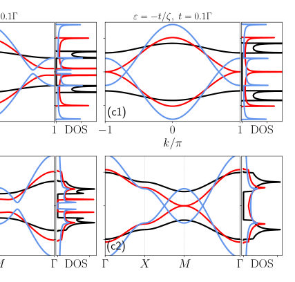
<figcaption class="paper-figure-caption"><b>Fig 1.</b> Figure 1: Examples of the band structure and the corresponding single-particle den- sity of states (DOS) in one (first row) and two (second row) spatial dimensions for infinite noninteracting system with periodic boundary conditions. Panels (a1), (a2), (c1), and (c2) display parameter regimes in which HSC is satisfied, leading to a clos- ing of the gap. In contrast, panels (b1) and (b2) illustrate generic situations where this condition is not fulfilled and the spectral gap remains finite.</figcaption>
</figure>
<figure class="paper-figure-card">
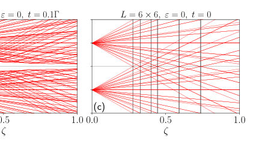
<figcaption class="paper-figure-caption"><b>Fig 2.</b> Figure 2: Evolution of the BdG single-particle spectrum for a finite noninteracting system with L sites as a function of ζ. Panel (a) shows a chain with L = 20 in the HSC regime, where the gap closes at the critical values indicated by the vertical lines. Panel (b) displays an 11×11 two-dimensional cluster in a generic parameter regime, where the gap remains finite for all ζ. Panel (c) illustrates a 6×6 cluster with trivially fulfilled HSC condition (ϵ = 0, t = 0). In panels (a) and (c), the vertical lines mark the analytical predictions from Eq. (16) for the zero-energy crossings, signaling sharp transitions between distinct singlet ground states.</figcaption>
</figure>
<figure class="paper-figure-card">
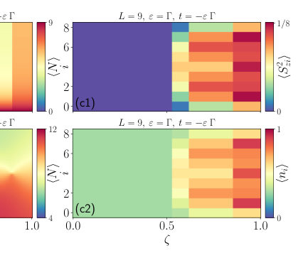
<figcaption class="paper-figure-caption"><b>Fig 3.</b> Figure 3: Local z-moment S(2) z (a1) and mean total electron occupation 〈N〉(a2) in the ζ-ϵ plane within the HSC regime for a noninteracting chain of length L = 9. Panels (b1) and (b2) show the corresponding quantities away from HSC at ϵ = 0, where the evolution is smooth up to special points ζd(L,n) at t = 0. Panels (c1) and (c2) illustrate the spatial distribution of the local moment and particle occupation for representative singlet ground states at ϵ = Γ, highlighting the qualitative difference between the homogeneous trivial singlet at |ζ| &lt; 0.5 and the inhomogeneous singlets realized at larger |ζ|.</figcaption>
</figure>
<figure class="paper-figure-card">
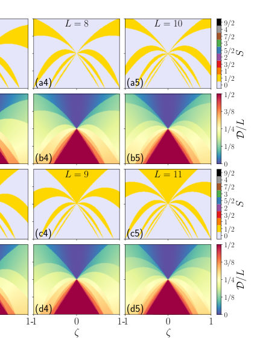
<figcaption class="paper-figure-caption"><b>Fig 4.</b> Figure 4: Phase diagrams in the ζ–U plane for a one-dimensional chain with an even (first and second row) and odd (third and fourth row) number of sites, ϵ = 0 and t = 0. (a) and (c): Total spin of the many-body ground state. (b) and (d): Average double occupancy D/L. Dashed black lines in (a1) are analytical phase boundaries calculated in App. C.</figcaption>
</figure>
<figure class="paper-figure-card">
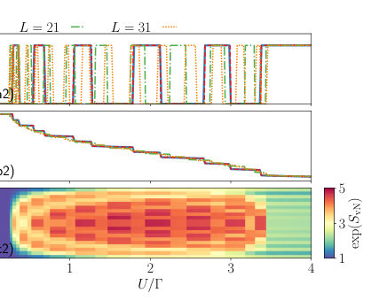
<figcaption class="paper-figure-caption"><b>Fig 5.</b> Figure 5: Evolution of the ground-state total spin (first row) and double occupancy per site (second row) with ζ (first column) and U (second column) for (a1,b1) U = Γ and t = 0 and (a2,b2) ζ = 0.44 at t = 0 and ϵ = 0 for open chain with different lengths. Third row show examples of entanglement entropy at each bond of L = 21 chain as function of ζ and U.</figcaption>
</figure>
</div>

<p><strong>Summary.</strong> This work theoretically analyzes correlated electron behavior in quantum dot arrays coupled to a superconductor. By mapping the complex Hamiltonian into a particle-number-conserving form, the authors use advanced NQS methods to map out distinct quantum phases. The findings reveal rich physics, including gap closing transitions and the emergence of effective Heisenberg models in different dimensions.</p>
<p><strong>Why it may be interesting.</strong> The combination of superconducting proximity effects with strong electronic correlations in nanoscale arrays is a major frontier in condensed matter physics, directly relevant to superconducting quantum circuits and quantum computing hardware.</p>
<details>
<summary>Detailed structure</summary>
<p><strong>Main problem.</strong> The study investigates the correlated electronic states within quantum dot clusters coupled to a common superconductor.</p>
<p><strong>Main result.</strong> The research identifies three distinct interacting regimes—trivial singlet, Heisenberg-like, and critical—and finds robust triplet ground states in 2D clusters.</p>
<p><strong>Method.</strong> The authors employ a combination of exact diagonalization, DMRG, and advanced Neural Quantum State Variational Monte Carlo (NQS-VMC) methods.</p>
<p><strong>Model / system.</strong> The system is an effective model of regular quantum dot clusters coupled to a superconductor, described by a complex Hamiltonian involving local repulsion, inter-dot hopping, and superconducting pairing terms.</p>
<p><strong>Key observables.</strong> Superconducting gap ($\Delta$), local moment ($\langle S_z 
angle$), mean electron occupation ($\langle N 
angle$), and entanglement entropy.</p>
<p><strong>Important parameters / regimes.</strong> Superconducting gap ($\Delta$), Coulomb repulsion ($U$), inter-dot coupling ($W$), and coupling strength ($\zeta$).</p>
<p><strong>Assumptions / limitations.</strong> The analysis relies on canonical transformations to restore particle-number conservation for NQS methods, and approximations like the Superconducting Atomic Limit ($\Delta 	o \infty$).</p>
<p><strong>Figures summary.</strong> Figures illustrate the evolution of the Bogoliubov-de Gennes spectrum showing gap closing at critical points, and phase diagrams mapping out ground state changes based on coupling strengths.</p>
<p><strong>Paper structure.</strong> The paper progresses from defining the full Hamiltonian and applying canonical transformations to mapping the system onto a particle-number-conserving form. It then analyzes the non-interacting limit (gap closing) before tackling the interacting regimes using advanced numerical techniques.</p>
</details>
<details>
<summary>Abstract</summary>
<p>We study an effective model of regular quantum dot clusters coupled to a common superconductor. By applying a canonical transformation, we map the system onto a particle-number-conserving representation, making it directly accessible to standard fermionic neural-network quantum-state variational Monte Carlo methods. We show that the superconducting gap closes at a particular high-symmetry point, which, in finite non-interacting systems, corresponds to crossings between singlet ground states of different character. Combining exact methods, density matrix renormalization group, and neural quantum-state variational Monte Carlo calculations, we identify three distinct interacting regimes: a trivial superconducting singlet phase, a strongly correlated regime connected to an effective Heisenberg model, and a critical intermediate regime with qualitatively different behavior in one and two dimensions. In one-dimensional systems, the intermediate regime exhibits a sequence of singlet-doublet transitions and becomes gapless in the thermodynamic limit even for finite Coulomb interaction. In two-dimensional clusters, we find robust triplet ground states. Furthermore, our results demonstrate that relatively standard fermionic neural quantum states provide an efficient approach for correlated superconducting nanostructures.</p>
</details>
<p><sub><a href="#top">↑ back to top</a></sub></p>

<p><a id="paper-2606.04187"></a></p>
<h3 id="emergence-of-macroscopic-quantum-order-via-translational-zero-modes"><a href="http://arxiv.org/abs/2606.04187v1">Emergence of Macroscopic Quantum Order via Translational Zero Modes</a></h3>
<p><strong>Authors:</strong> Kenan Gundogdu<br>
<strong>Type:</strong> theory · <strong>Category:</strong> quantum gases · <strong>PDF:</strong> <a href="https://arxiv.org/pdf/2606.04187v1">https://arxiv.org/pdf/2606.04187v1</a><br>
<strong>Analysis basis:</strong> full PDF text, analyzed in chunks
<strong>Topic relevance:</strong> <code>analog quantum simulation</code> <strong>3/5</strong> · <code>driven-dissipative phase transition</code> <strong>3/5</strong> · <code>Keldysh / 2PI / non-Gaussian methods</code> <strong>2/5</strong> · <code>correlated cavity matter</code> <strong>2/5</strong> · <code>methods for driven-dissipative</code> <strong>2/5</strong> · <code>Frenkel-Kontorova</code> <strong>1/5</strong> · <code>non-equilibrium dynamics</code> <strong>1/5</strong> · <code>non-equilibrium universality</code> <strong>1/5</strong></p>
<div class="figure-strip-hint">↔ Scroll figures horizontally</div>
<div class="paper-figures-scroll">
<figure class="paper-figure-card">
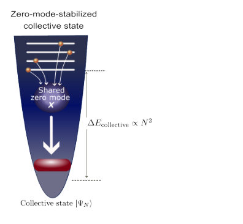
<figcaption class="paper-figure-caption"><b>Fig 1.</b> Fig. 1 From fixed-spectrum condensation to zero-mode-stabilized collective order. (a) In conventional condensation, particles occupy the lowest level of a fixed excitation spectrum only after thermal occupation of higher-energy states is reduced below a critical temperature. (b) In a solitonic confining potential, fluctuations of the translational zero mode shift the potential relative to the laboratory frame. In the soliton frame, this motion coherently mixes the defect-bound excitonic states. (c) In the many-body regime, all confined excitons couple to the same shared zero-mode coordinate. This collective structural channel drives a single many-body state |ΨN⟩to lower energy, with...</figcaption>
</figure>
<figure class="paper-figure-card">
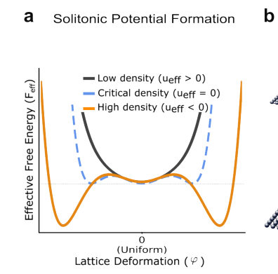
<figcaption class="paper-figure-caption"><b>Fig 2.</b> Fig. 2 Density-induced lattice instability and formation of a self-generated solitonic potential. (a) Effective Landau free energy Feff as a function of the lattice deformation coordinate φ for increasing excitation density. At low density, the uniform configuration φ = 0 is the stable minimum. As the density increases, the quadratic exciton–lattice coupling g2 renormalizes the effec- tive quartic coefficient ueff, causing the free-energy landscape to develop finite-deformation minima. At sufficiently high density, a finite-φ configuration becomes energetically favored, indicating a ther- modynamic instability of the uniform lattice. (b) Real-space representation of the transition. In the...</figcaption>
</figure>
<figure class="paper-figure-card">
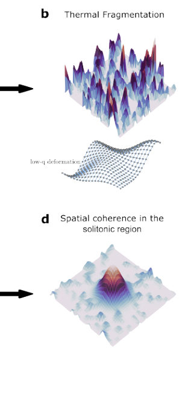
<figcaption class="paper-figure-caption"><b>Fig 3.</b> Fig. 3 Impact of the solitonic transition on excitonic spatial coherence and potential landscapes. (a) In the homogeneous regime, the uniform crystal lattice defines an unconfined con- tinuous spectrum, supporting extended excitonic eigenstates approximated here as plane waves. (b) Extended excitons interact with a gapless continuum of traveling thermal phonons. These low-energy fluctuations generate random lattice distortions that modulate the potential landscape, dephase the excitonic wavefunctions, and distribute the population over many spatially incoherent configurations. (c) The solitonic transition changes the electronic geometry. A localized structural deformation gen- erates a...</figcaption>
</figure>
<figure class="paper-figure-card">
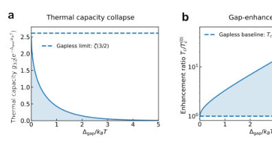
<figcaption class="paper-figure-caption"><b>Fig 4.</b> Fig. 4 Thermal-capacity suppression by a density-dependent collective gap. a, A finite ∆gap reduces the Bose phase-space factor from the gapless value g3/2(1) = ζ(3/2) to</figcaption>
</figure>
</div>

<p><strong>Summary.</strong> The paper proposes that macroscopic quantum order can be sustained at high temperatures not by cooling, but by the self-generation of a mobile confining potential (soliton) coupled to the lattice. This coupling creates a 'translational zero mode' that opens a protective energy gap, stabilizing the collective quantum state and enhancing the critical temperature beyond conventional predictions.</p>
<p><strong>Why it may be interesting.</strong> This work provides a powerful, general theoretical framework for achieving high-temperature quantum coherence by engineering structural degrees of freedom (the zero mode) to modify the many-body spectrum, which is highly relevant to AMO physics and quantum optics.</p>
<details>
<summary>Detailed structure</summary>
<p><strong>Main problem.</strong> To find a mechanism for achieving macroscopic quantum order at elevated temperatures that bypasses the limitations of fixed excitation spectra or conventional pairing instabilities.</p>
<p><strong>Main result.</strong> The coupling of electronic excitations to a deformable lattice via a translational zero mode generates a self-confining potential, opening a density-dependent gap that stabilizes coherence at higher temperatures.</p>
<p><strong>Method.</strong> The analysis uses effective Hamiltonian descriptions, mean-field theory, and variational principles to model the collective energy lowering driven by the zero mode.</p>
<p><strong>Model / system.</strong> The system involves excitons strongly coupled to a deformable lattice, leading to a density-induced lattice instability that creates a mobile, self-generated solitonic potential. This potential gives rise to a translational zero mode.</p>
<p><strong>Key observables.</strong> Density-dependent gap ($\Delta_{gap}$), critical temperature ($T_c$), and the occupation of the single collective many-body orbital ($\lambda_0 = O(N)$).</p>
<p><strong>Important parameters / regimes.</strong> Critical density, coupling constants ($g_1, g_2$), and the zero-mode stiffness ($\kappa$).</p>
<p><strong>Assumptions / limitations.</strong> The zero mode acts as a shared collective coordinate, and the system can be effectively described by a two-level subspace in the macroscopic limit.</p>
<p><strong>Figures summary.</strong> Figures illustrate the transition from uniform to solitonic phases, the modification of the Bose phase-space factor due to the gap, and the enhancement of $T_c$ beyond standard scaling laws.</p>
<p><strong>Paper structure.</strong> The paper progresses from identifying the general problem to modeling the lattice instability, deriving the zero-mode coupling, calculating the resulting energy lowering, and finally demonstrating the stabilization of coherence via the gap and ODLRO.</p>
</details>
<details>
<summary>Abstract</summary>
<p>Macroscopic quantum coherence in solids, such as in superfluids, superconductors, and condensates, is generally limited to low temperatures because order forms within a fixed excitation spectrum whose competing states become thermally populated as temperature rises. Here, we show that strong coupling between electronic excitations and a deformable lattice enables a different route. Above a critical density, this coupling nucleates self generated confining potentials that trap the very excitations generating them. Unlike rigid external traps, these potentials can translate through the host lattice without changing their internal structure, defining a translational zero mode. Coupling to this zero mode provides a shared dynamical coordinate that lowers and isolates a single collective many body configuration, opening a density dependent gap that suppresses thermal occupation of competing states and supports off diagonal long range order at elevated temperatures. As a concrete realization, we identify high-temperature superfluorescence in lead halide perovskites as the radiative instability of this zero mode dressed ordered excitonic state. More broadly, this establishes a general route to macroscopic quantum order: not cooling within a fixed spectrum, nor pairing instabilities, but a self generated mobile confining structure whose translational zero mode reconstructs the many-body spectrum to protect coherence.</p>
</details>
<p><sub><a href="#top">↑ back to top</a></sub></p>

<p><a id="paper-2606.04558"></a></p>
<h3 id="extremely-slow-scaling-of-minimal-hamming-distance-in-quantum-sampling-data"><a href="http://arxiv.org/abs/2606.04558v1">Extremely slow scaling of minimal Hamming distance in quantum sampling data</a></h3>
<p><strong>Authors:</strong> P. S. Golubev, I. A. Iakovlev, V. V. Mazurenko<br>
<strong>Type:</strong> both · <strong>Category:</strong> disordered systems and neural networks · <strong>PDF:</strong> <a href="https://arxiv.org/pdf/2606.04558v1">https://arxiv.org/pdf/2606.04558v1</a><br>
<strong>Analysis basis:</strong> full PDF text, analyzed in chunks
<strong>Topic relevance:</strong> <code>analog quantum simulation</code> <strong>3/5</strong> · <code>methods for driven-dissipative</code> <strong>3/5</strong> · <code>QC/QI experiment</code> <strong>2/5</strong> · <code>entanglement &amp; information structure</code> <strong>2/5</strong> · <code>driven-dissipative phase transition</code> <strong>1/5</strong> · <code>exotic spin models in light-matter</code> <strong>1/5</strong> · <code>non-equilibrium dynamics</code> <strong>1/5</strong> · <code>non-equilibrium universality</code> <strong>1/5</strong> · <code>quantum measurements</code> <strong>1/5</strong></p>
<div class="figure-strip-hint">↔ Scroll figures horizontally</div>
<div class="paper-figures-scroll">
<figure class="paper-figure-card">
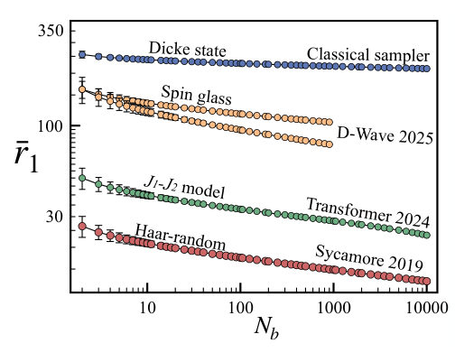
<figcaption class="paper-figure-caption"><b>Fig 1.</b> FIG. 1. Minimal Hamming distance functions calculated for a few notable quantum states (from top to bottom): the classically-sampled 512-qubit Dicke state with 256 excita- tions; 324-qubit spin-glass states simulated on the D-Wave quantum annealer [20] with the square lattice topology and quench times of 7 (the upper yellow curve) and 20 (the lower yellow curve) ns; ground state of the frustrated antiferromag- netic J1 −J2 model optimized with transformer-based neural network quantum state approach [21] on 10 × 10 square lat- tice at J2 = 0.5; 53-qubit Haar-random state imitated on Sycamore quantum processor [22].</figcaption>
</figure>
<figure class="paper-figure-card">
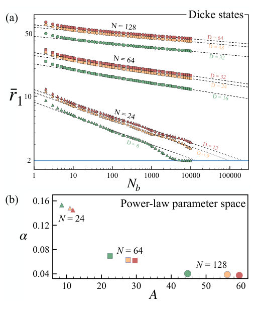
<figcaption class="paper-figure-caption"><b>Fig 2.</b> FIG. 2. (a) Average minimal distance function, Eq.1 calcu- lated for Dicke states of 24-, 64- and 128-qubit systems in the σz basis. Each point was averaged over 10 samples. Black dashed lines denote the fit of the sampling data with Eq.2. (b) Map distinguishing the different Dicke states with respect to the power-law parameters A and α.</figcaption>
</figure>
<figure class="paper-figure-card">
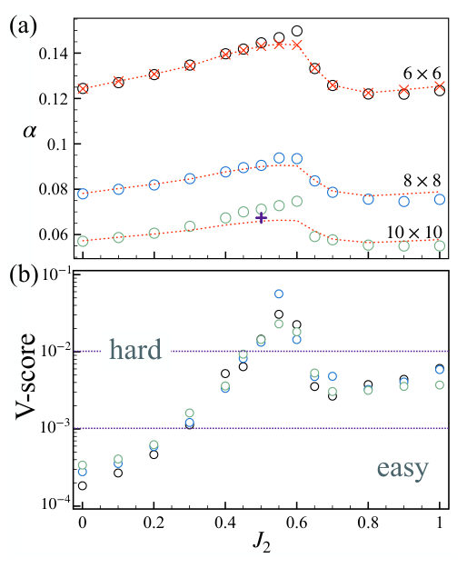
<figcaption class="paper-figure-caption"><b>Fig 3.</b> FIG. 3. (a) Power-law parameter, α calculated for exact ED and approximated ViT ground states of the antiferromagnetic J1 −J2 model. Black, blue and green circles correspond to the ViT results obtained for 6 × 6, 8 × 8 and 10 × 10 super- cells, respectively. Red crosses stand for ED solutions of the 6 × 6 system. Red dotted lines denote ED data rescaled as described in the text. The violet plus sign corresponds to the estimate based on pre-trained ViT data from [21]. (b) V-score metric calculated for the ViT solutions with Eq.5.</figcaption>
</figure>
<figure class="paper-figure-card">
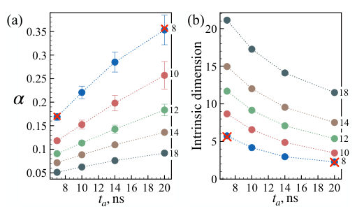
<figcaption class="paper-figure-caption"><b>Fig 4.</b> FIG. 4. (a) Dependence of the power α on the annealing time calculated for D-Wave sampling data [20]. Numbers on the right indicate linear system sizes. These results were averaged over 20 instances. (b) Intrinsic dimension averaged over 20 instances. Red crosses denote the power α (a) and ID (b) calculated for MPS 8 × 8 samples from Ref.20.</figcaption>
</figure>
<figure class="paper-figure-card">
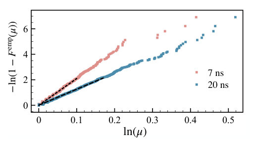
<figcaption class="paper-figure-caption"><b>Fig 5.</b> FIG. 6. Example of cumulative distributions against µ ob- tained for one specific disorder realization for the 18x18 D- Wave data at ta = 7 ns and ta = 20 ns. The corresponding ID values defined from fit are equal to 21 and 12.59, respec- tively.</figcaption>
</figure>
</div>

<p><strong>Summary.</strong> The paper introduces the average minimal Hamming distance as a universal metric to characterize quantum states from sparse measurement data. By fitting this distance to a power law, the authors demonstrate that the resulting parameters can reliably quantify state complexity and detect quantum phase transitions across diverse physical models, including those studied on quantum annealers.</p>
<p><strong>Why it may be interesting.</strong> This work provides a powerful, data-driven diagnostic tool that bypasses the need to calculate explicit physical observables, making it highly relevant for analyzing noisy, limited-data measurements from NISQ quantum hardware.</p>
<details>
<summary>Detailed structure</summary>
<p><strong>Main problem.</strong> The core challenge is characterizing complex quantum states using only sparse measurement data, which is limited by the exponentially large Hilbert space.</p>
<p><strong>Main result.</strong> The average minimal Hamming distance ($ar{r}_1(N_b)$) exhibits a universal power-law scaling, allowing the reliable extraction of quantum state complexity and the identification of phase transitions.</p>
<p><strong>Method.</strong> The authors propose using the power-law fitting of $ar{r}_1(N_b) \propto N_b^{-\alpha}$ as a robust metric, comparing results from real quantum hardware, classical simulations, and advanced neural network representations.</p>
<p><strong>Model / system.</strong> The analysis is applied to various quantum systems, including Dicke states, the $J_1-J_2$ model on a square lattice, and spin-glass systems, often simulated using Variational Neural-Network Quantum States (ViT).</p>
<p><strong>Key observables.</strong> Average minimal Hamming distance ($ar{r}_1(N_b)$), power-law parameters ($A$ and $\alpha$), and Intrinsic Dimension (ID).</p>
<p><strong>Important parameters / regimes.</strong> The exponent $\alpha$ is shown to be extremely slow, and the analysis is sensitive to critical points in the $J_1-J_2$ phase diagram.</p>
<p><strong>Assumptions / limitations.</strong> The method assumes that the underlying quantum state structure dictates a universal power-law scaling in the minimal Hamming distance, even with limited sampling.</p>
<p><strong>Figures summary.</strong> Figures illustrate the power-law scaling of $ar{r}_1(N_b)$ for various states (Dicke, $J_1-J_2$), showing the dependence on system size and phase, and comparing results from different computational methods.</p>
<p><strong>Paper structure.</strong> The paper introduces the metric, applies it to diverse physical models (Dicke, $J_1-J_2$), compares results across different computational techniques (ED, ViT, QMC), and concludes by establishing the universality of the power-law scaling for state characterization.</p>
</details>
<details>
<summary>Abstract</summary>
<p>Quantum data can be obtained from a diverse range of sources, including direct measurements from noisy quantum processors, cold-atom simulators, and classical approximations such as variational neural-network states. However, our ability to characterize these systems is fundamentally limited, as the available measurement data is often sparse compared to the exponentially large Hilbert space of the system. To address this, we propose using the average minimal Hamming distance calculated for a set of unique bitstrings as a robust metric revealing a universal power-law behaviour. Through various examples of real experiments and simulations, we show that the power-law parameters reliably capture the complexity of quantum states and identify quantum phase transitions from limited quantum information, without the need for accumulating extensive statistics or explicitly calculating physical observables. This enables the analysis of completely different quantum experiments within a single framework.</p>
</details>
<p><sub><a href="#top">↑ back to top</a></sub></p>

<p><a id="paper-2606.04666"></a></p>
<h3 id="nonreciprocal-dispersive-coupling-for-quantum-sensing"><a href="http://arxiv.org/abs/2606.04666v1">Nonreciprocal Dispersive Coupling for Quantum Sensing</a></h3>
<p><strong>Authors:</strong> Dong Xie, Chunling Xu<br>
<strong>Type:</strong> theory · <strong>Category:</strong> other · <strong>PDF:</strong> <a href="https://arxiv.org/pdf/2606.04666v1">https://arxiv.org/pdf/2606.04666v1</a><br>
<strong>Analysis basis:</strong> full PDF text, analyzed in chunks
<strong>Topic relevance:</strong> <code>quantum measurements</code> <strong>3/5</strong> · <code>Tavis-Cummings &amp; cavity-many-emitter</code> <strong>2/5</strong> · <code>analog quantum simulation</code> <strong>2/5</strong> · <code>correlated cavity matter</code> <strong>2/5</strong> · <code>Keldysh / 2PI / non-Gaussian methods</code> <strong>1/5</strong> · <code>correlated / nonlocal dissipation</code> <strong>1/5</strong> · <code>driven-dissipative phase transition</code> <strong>1/5</strong> · <code>entanglement &amp; information structure</code> <strong>1/5</strong> · <code>measurement-induced transitions</code> <strong>1/5</strong> · <code>methods for driven-dissipative</code> <strong>1/5</strong></p>
<div class="figure-strip-hint">↔ Scroll figures horizontally</div>
<div class="paper-figures-scroll">
<figure class="paper-figure-card">
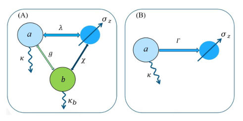
<figcaption class="paper-figure-caption"><b>Fig 1.</b> Figure 1. Schematic diagram of nonreciprocal dispersive cou- pling. (A) The cavity mode a is coupled to the bosonic mode b with the coupling strength denoted by g. The qubit couples to the cavity mode a and bosonic b, with dispersive coupling strengths λ and χ, respectively. The dissipation rate suffered by the bosonic mode b is much higher than that of the cavity mode a, κb ≫(κ, g). (B) Schematic diagram of the equivalent nonreciprocal coupling between the cavity and the qubit. Af- ter fully eliminating bosonic mode b adiabatically, the cavity mode a couples to the qubit σz via nonreciprocal dispersive coupling with strength Γ.</figcaption>
</figure>
<figure class="paper-figure-card">
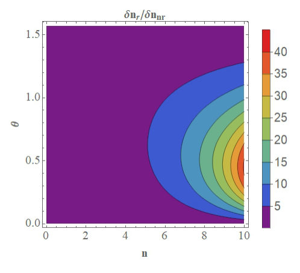
<figcaption class="paper-figure-caption"><b>Fig 2.</b> Figure 2. Ratio of measurement uncertainty δnr/δnnr versus cavity photon number n and angle θ under reciprocal and nonreciprocal dispersive coupling. Here, we consider that λ ≫ κ and Γ ≫κ.</figcaption>
</figure>
</div>

<p><strong>Summary.</strong> This paper theoretically investigates how nonreciprocal dispersive coupling can enhance quantum sensing beyond what is achievable with standard reciprocal coupling. By analyzing the measurement uncertainty using the Quantum Fisher Information, the authors demonstrate that nonreciprocity provides an exponential advantage in precision for measuring both photon number and driving strength. This work proposes a novel method to build ultra-precise quantum sensors using engineered nonreciprocal interactions.</p>
<p><strong>Why it may be interesting.</strong> This work is highly relevant to AMO physics and quantum optics as it provides a theoretical framework for enhancing quantum measurement precision by engineering nonreciprocal interactions in cavity QED systems.</p>
<details>
<summary>Detailed structure</summary>
<p><strong>Main problem.</strong> The paper compares the quantum sensing capabilities of nonreciprocal versus reciprocal dispersive coupling in a qubit-cavity system.</p>
<p><strong>Main result.</strong> Nonreciprocal coupling provides superior measurement precision for both cavity photon number and driving strength compared to its reciprocal counterpart, especially at high photon numbers or driving strengths.</p>
<p><strong>Method.</strong> The authors derived measurement uncertainties using the Quantum Fisher Information and the Quantum Cramér-Rao bound for both coupling types.</p>
<p><strong>Model / system.</strong> The system involves a qubit coupled dispersively to a cavity mode, which is modeled using a Hamiltonian and analyzed via the master equation and quantum Langevin equations.</p>
<p><strong>Key observables.</strong> Measurement uncertainty ($\delta^2 n$ for photon number; $\delta^2 \epsilon$ for driving strength $\epsilon$), and Quantum Fisher Information ($F_Q$).</p>
<p><strong>Important parameters / regimes.</strong> Dispersive coupling strengths ($\lambda$, $\Gamma$), cavity dissipation rate ($\kappa$), initial photon number ($n$), and driving strength ($\epsilon$).</p>
<p><strong>Assumptions / limitations.</strong> The analysis relies on adiabatic elimination of an intermediate bosonic mode and assumes specific dissipation rate hierarchies.</p>
<p><strong>Figures summary.</strong> Figure 1 schematically illustrates the nonreciprocal coupling setup and its equivalent form. Figure 2 (mentioned) likely compares the ratio of measurement uncertainties ($\delta_{nr}/\delta_{nnr}$) versus photon number $n$.</p>
<p><strong>Paper structure.</strong> The paper progresses by establishing the Hamiltonian for both coupling types, deriving the evolution equations, calculating the Quantum Fisher Information for both, and finally comparing the resulting measurement uncertainties for photon number and driving strength using novel measurement strategies.</p>
</details>
<details>
<summary>Abstract</summary>
<p>Dispersive coupling is widely utilized for quantum information readout. Most prior studies have concentrated on reciprocal dispersive coupling. Here, we further construct nonreciprocal dispersive coupling and apply it to quantum sensing. For cavity photon number measurement, nonreciprocal dispersive coupling delivers higher precision than its reciprocal counterpart, and this advantage grows more pronounced with an increase in photon number. When directly measuring the single-photon driving strength, however, nonreciprocal dispersive coupling shows no superiority over reciprocal dispersive coupling. By converting the information of driving strength into cavity photon numbers via our proposed strategy, nonreciprocal dispersive coupling again outperforms reciprocal dispersive coupling in precision, with the advantage becoming increasingly significant at larger driving strength. This work presents a novel method to boost quantum sensing and enable the fabrication of ultra-precise quantum sensors.</p>
</details>
<p><sub><a href="#top">↑ back to top</a></sub></p>

<p><a id="paper-2606.04386"></a></p>
<h3 id="optimizing-the-sensitivity-noise-trade-off-in-non-hermitian-sensing-via-off-exceptional-deficiency-operation"><a href="http://arxiv.org/abs/2606.04386v1">Optimizing the Sensitivity-Noise Trade-off in Non-Hermitian Sensing via Off-Exceptional-Deficiency Operation</a></h3>
<p><strong>Authors:</strong> Shangxuan Li, Bin Guo<br>
<strong>Type:</strong> theory · <strong>Category:</strong> other · <strong>PDF:</strong> <a href="https://arxiv.org/pdf/2606.04386v1">https://arxiv.org/pdf/2606.04386v1</a><br>
<strong>Analysis basis:</strong> full PDF text, analyzed in chunks
<strong>Topic relevance:</strong> <code>driven-dissipative phase transition</code> <strong>3/5</strong> · <code>methods for driven-dissipative</code> <strong>3/5</strong> · <code>analog quantum simulation</code> <strong>2/5</strong> · <code>non-equilibrium dynamics</code> <strong>2/5</strong> · <code>non-equilibrium universality</code> <strong>2/5</strong> · <code>Keldysh / 2PI / non-Gaussian methods</code> <strong>1/5</strong> · <code>Kondo &amp; dissipative impurity</code> <strong>1/5</strong> · <code>correlated / nonlocal dissipation</code> <strong>1/5</strong></p>
<div class="figure-strip-hint">↔ Scroll figures horizontally</div>
<div class="paper-figures-scroll">
<figure class="paper-figure-card">
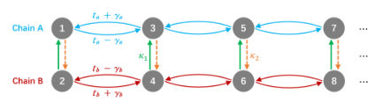
<figcaption class="paper-figure-caption"><b>Fig 1.</b> FIG. 1. Schematic of the double-chain Hatano–Nelson model with asymmetric interlayer coupling. Chain A (blue, up- per) and chain B (red, lower) feature opposite nonreciprocal nearest-neighbor hopping with amplitudes ta ±γa and tb ±γb, respectively. Solid and dashed arrows denote the dominant forward coupling κ1 and reverse coupling κ2, respectively, sat- isfying κ1 ≫κ2.</figcaption>
</figure>
<figure class="paper-figure-card">
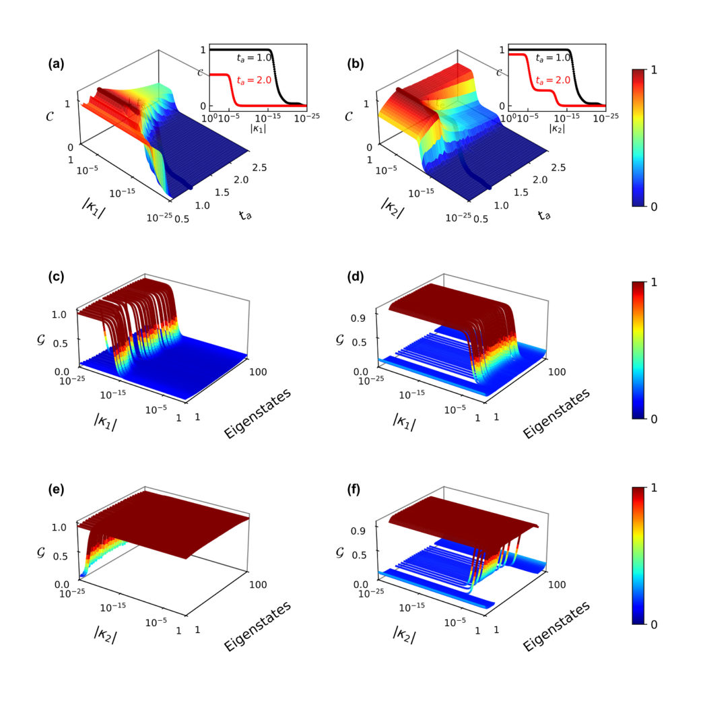
<figcaption class="paper-figure-caption"><b>Fig 2.</b> FIG. 2. Eigenspace coalescence and real-space skin-mode distribution under open boundary conditions. (a), (b) Cosine similarity C of the eigenspace as a function of interlayer coupling strength (|κ1| or |κ2|) and hopping parameter ta, for B →A and A →B coupling configurations, respectively. Insets display C versus κ1,2 along two representative cuts at ta = 1.0, tb = 1.0, γa = 0.5, γb = 0.5 (black line, ED) and ta = 2.0, tb = 1.0, γa = 0.5, γb = 0.25 (red line, off-ED). (c), (d) Real-space spatial density G of all eigenstates as a function of |κ1| for B →A coupling. (e), (f) Corresponding spatial density G as a function of |κ2| for A →B coupling.</figcaption>
</figure>
<figure class="paper-figure-card">
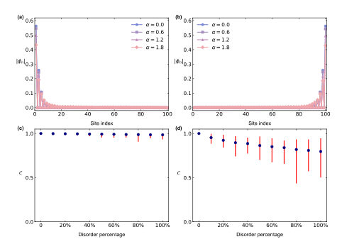
<figcaption class="paper-figure-caption"><b>Fig 3.</b> FIG. 3. Effects of on-site spatial disorder on eigenstate localization and eigenspace coalescence under open bound- ary conditions (N = 50). (a), (b) Ensemble-averaged real- space probability density of the OBC eigenstates under vary- ing disorder strengths α = 0.0, 0.6, 1.2, 1.8 for the B →A and A →B coupling configurations, respectively. (c), (d) Eigenspace cosine similarity C as a function of the disorder mask fraction p for disorder strengths α = 0.6 and α = 1.8. Each data point (blue dot) represents the ensemble mean over multiple disorder realizations, with the red error bars indicat- ing the corresponding standard deviation.</figcaption>
</figure>
<figure class="paper-figure-card">
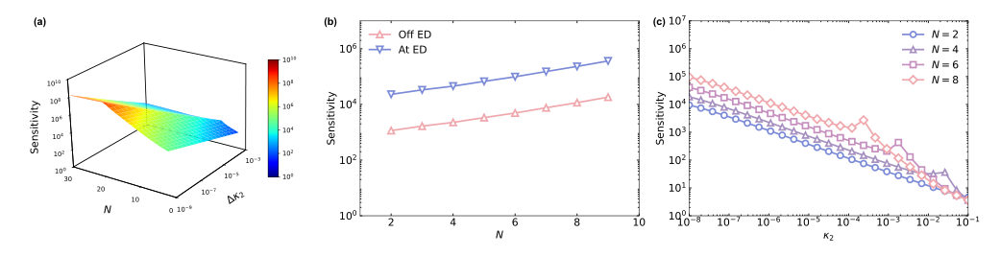
<figcaption class="paper-figure-caption"><b>Fig 4.</b> FIG. 4. Sensing performance of the double-chain Hatano-Nelson system. (a) Sensitivity S as a function of perturbation strength ∆κ2 for various system sizes N. (b) Sensitivity S versus lattice size N at a fixed target signal ∆κ2 = 10−8, comparing the At-ED and Off-ED (κ2 = 10−6) operating regimes. (c) Sensitivity S as a function of background bias κ2 for different system sizes N in the Off-ED configuration. All results are obtained under open boundary conditions.</figcaption>
</figure>
<figure class="paper-figure-card">
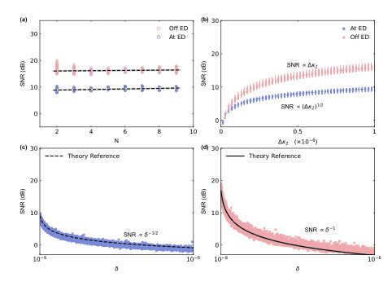
<figcaption class="paper-figure-caption"><b>Fig 5.</b> FIG. 5. Signal-to-noise ratio (SNR) comparison between the At-ED and Off-ED operating regimes. (a) SNR as a function of system size N at a fixed noise level δ = 10−8 for the At- ED and Off-ED (κ2 = 10−6) configurations, where dashed lines indicate the respective ensemble means. (b) SNR as a function of the target signal strength ∆κ2 at δ = 10−8. (c) SNR as a function of noise level δ at the strict ED point, with the dashed line showing the theoretical δ−1/2 scaling. (d) Corresponding SNR versus δ in the Off-ED regime, with the solid line showing the theoretical δ−1 scaling.</figcaption>
</figure>
</div>

<p><strong>Summary.</strong> This paper tackles the fundamental trade-off between extreme sensitivity and noise immunity in non-Hermitian quantum sensors. By proposing an 'Off-ED' operating regime, the authors show how to move away from a mathematically singular point to achieve a vastly superior, linearly scaling Signal-to-Noise Ratio (SNR). This establishes a robust framework for practical, high-performance topological sensing devices.</p>
<p><strong>Why it may be interesting.</strong> This work provides a concrete, actionable paradigm for designing next-generation topological sensors by offering a method to bypass fundamental noise limitations inherent at idealized singular points.</p>
<details>
<summary>Detailed structure</summary>
<p><strong>Main problem.</strong> The central challenge addressed is reconciling the extreme sensitivity of non-Hermitian sensors with the simultaneous amplification of environmental noise (the sensitivity-noise trade-off).</p>
<p><strong>Main result.</strong> The authors propose an 'Off-ED' operating regime that eliminates pathological geometric singularities, restoring a linear scaling law for the Signal-to-Noise Ratio (SNR) while preserving exponential sensitivity scaling.</p>
<p><strong>Method.</strong> The analysis involves comparing the performance at the strict Exceptional Deficiency (ED) limit versus operating slightly away from it (Off-ED), using noise matrix analysis and scaling law derivations.</p>
<p><strong>Model / system.</strong> The system is a double-chain Hatano-Nelson model featuring unidirectional interlayer coupling, analyzed using a non-Hermitian Hamiltonian with an off-diagonally asymmetric block structure.</p>
<p><strong>Key observables.</strong> Signal-to-Noise Ratio (SNR), spectral splitting ($\Delta E_n$), Eigenspace Cosine Similarity ($C$), and the background bias ($\kappa_2$).</p>
<p><strong>Important parameters / regimes.</strong> Exceptional Deficiency (ED) limit, Off-ED regime, disorder strength ($\alpha$), and noise magnitude ($\delta$).</p>
<p><strong>Assumptions / limitations.</strong> The analysis relies on the highly asymmetric interlayer coupling condition and the ability to model noise via a global noise matrix.</p>
<p><strong>Figures summary.</strong> Figures compare SNR scaling ($ ext{SNR} \propto \delta^{-1/2}$ vs. $   ext{SNR} \propto \delta^{-1}$) and show the structural robustness of the system under varying levels of spatial disorder.</p>
<p><strong>Paper structure.</strong> The paper systematically analyzes the trade-off by first establishing the ED limit's limitations, then introducing the Off-ED framework to restore linear noise scaling, and finally demonstrating this improvement across various noise channels and disorder levels.</p>
</details>
<details>
<summary>Abstract</summary>
<p>A central challenge in non-Hermitian sensing is that spectral singularities simultaneously amplify both the signal and environmental noise. We address this predicament in a double-chain Hatano-Nelson model featuring unidirectional interlayer coupling. At the exceptional deficiency (ED) limit, the system exhibits a macroscopically degenerate complex spectrum and a pronounced non-Hermitian skin effect (NHSE), yielding a sensitivity that scales exponentially with lattice size $N$ while remaining robust across a six-order-of-magnitude detuning range. By introducing diagonal spatial disorder, we demonstrate that the NHSE is progressively suppressed, whith eigenspace cosine similarity analysis quantifying a well-defined fault-tolerance threshold. To reconcile the sensitivity-noise trade-off, we delineate "At-ED" and "Off-ED" operating regimes. While the At-ED configuration imposes fractional-order noise amplification (SNR $\propto δ^{-1/2}$) that saturates at a suboptimal plateau, migrating to the Off-ED regime eliminates this geometric singularity and restores a linear scaling law (SNR $\propto δ^{-1}$), achieving an SNR enhancement of several orders of magnitude. Crucially, this improvement is achieved while fully preserving the exponential sensitivity scaling, albeit at a slightly reduced absolute sensitivity compared to the strict At-ED limit. Our findings establish the Off-ED framework as a concrete paradigm for next-generation topological sensors that reconcile extreme sensitivity with robust noise immunity.</p>
</details>
<p><sub><a href="#top">↑ back to top</a></sub></p>

<p><a id="paper-2606.05092"></a></p>
<h3 id="math262math-pairing-in-metallic-and-particle-hole-asymmetric-systems"><a href="http://arxiv.org/abs/2606.05092v1">$η$-pairing in metallic and particle-hole asymmetric systems</a></h3>
<p><strong>Authors:</strong> Philipp Werner, Aaram J. Kim, Lei Geng<br>
<strong>Type:</strong> theory · <strong>Category:</strong> strongly correlated electrons · <strong>PDF:</strong> <a href="https://arxiv.org/pdf/2606.05092v1">https://arxiv.org/pdf/2606.05092v1</a><br>
<strong>Analysis basis:</strong> full PDF text, analyzed in chunks
<strong>Topic relevance:</strong> <code>Keldysh / 2PI / non-Gaussian methods</code> <strong>3/5</strong> · <code>methods for driven-dissipative</code> <strong>3/5</strong> · <code>non-equilibrium dynamics</code> <strong>3/5</strong> · <code>analog quantum simulation</code> <strong>1/5</strong> · <code>driven-dissipative phase transition</code> <strong>1/5</strong> · <code>non-equilibrium universality</code> <strong>1/5</strong></p>
<div class="figure-strip-hint">↔ Scroll figures horizontally</div>
<div class="paper-figures-scroll">
<figure class="paper-figure-card">
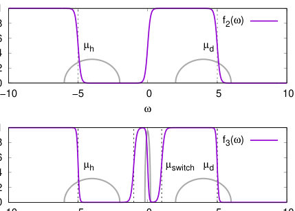
<figcaption class="paper-figure-caption"><b>Fig 1.</b> FIG. 1: Top panel: Illustration of a nonequilibrium distribu- tion function f2(ω) with two Fermi edges at µd and µh and a 1 −fFermi type switching near ω = 0. Bottom panel: Illus- tration of a nonequilibrium distribution function f3(ω) with three Fermi edges at µd, 0 and µh, and two 1 −fFermi type switchings near ω = ±µswitch. The gray lines are sketches of a Mott insulating (top panel) and metallic (bottom panel) density of states.</figcaption>
</figure>
<figure class="paper-figure-card">
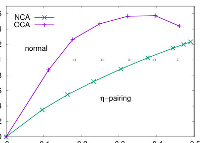
<figcaption class="paper-figure-caption"><b>Fig 2.</b> FIG. 2: Phase diagram of the half-filled Hubbard model with U = 8 in the space of doublon density (= holon density) and effective temperature Teff. The green and violet crosses show the effective critical temperatures Tc,effcalculated with NCA and OCA, respectively, while the black dots mark rep- resentative parameter sets used below to study the effect of particle-hole asymmetry.</figcaption>
</figure>
<figure class="paper-figure-card">
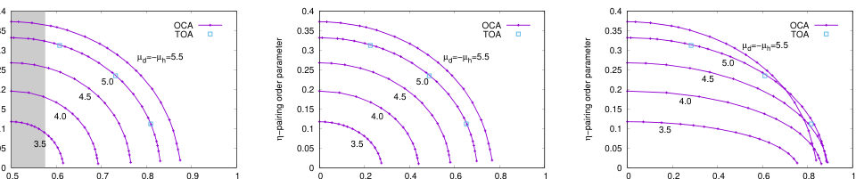
<figcaption class="paper-figure-caption"><b>Fig 3.</b> FIG. 3: η-pairing order parameter as a function of filling nσ (left panel), doublon-holon asymmetry nd −nh (middle panel) and relative doublon-holon asymmetry (nd−nh)/(nd+nh) (right panel) for the indicated values of µd = −µh (U = 8, βd = βh = 10). The violet crosses are OCA results. For µd = −µh = 5.0, we also show three data points obtained with the TOA.</figcaption>
</figure>
<figure class="paper-figure-card">
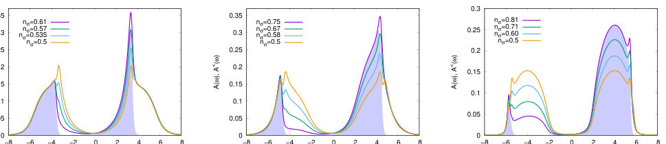
<figcaption class="paper-figure-caption"><b>Fig 4.</b> FIG. 4: OCA spectral functions A(ω) (lines) and occupations A&lt;(ω) (shading, for the largest asymmetry only) for η-pairing states with βd = βh = 10. The effective chemical potentials are µd = −µh = 3.5 (left panel), µd = −µh = 4.5 (middle panel) and µd = −µh = 5.5 (right panel), while the fillings nσ are indicated in the labels.</figcaption>
</figure>
<figure class="paper-figure-card">
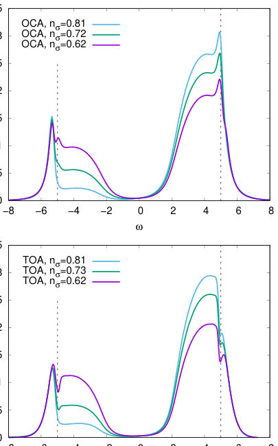
<figcaption class="paper-figure-caption"><b>Fig 5.</b> FIG. 5: OCA and TOA spectral functions for βd = βh = 10, µd = −µh = 5.0 (vertical dashed lines) and three different fillings nσ.</figcaption>
</figure>
</div>

<p><strong>Summary.</strong> This theoretical work explores $\eta$-pairing superconductivity in correlated materials driven out of equilibrium by light. Using nonequilibrium DMFT, the authors find that while $\eta$-pairing is robust against charge imbalance in strongly correlated regimes, any asymmetry in the effective doublon and holon temperatures significantly suppresses the superconducting order parameter.</p>
<p><strong>Why it may be interesting.</strong> The use of nonequilibrium DMFT to study photo-induced pairing mechanisms provides a powerful theoretical tool for understanding non-equilibrium quantum phenomena in correlated materials, bridging concepts from quantum optics and condensed matter theory.</p>
<details>
<summary>Detailed structure</summary>
<p><strong>Main problem.</strong> The study investigates the existence and robustness of $\eta$-pairing superconductivity in non-particle-hole symmetric and photo-excited metallic systems, extending beyond previous studies limited to symmetric Mott insulators.</p>
<p><strong>Main result.</strong> $\eta$-pairing is robust against changes in total filling and doublon-holon imbalance in the strongly correlated regime, but the order parameter is strongly suppressed by asymmetry in effective doublon and holon temperatures.</p>
<p><strong>Method.</strong> The authors employ nonequilibrium Dynamical Mean Field Theory (DMFT) combined with strong-coupling impurity solvers up to third order to model the non-equilibrium dynamics.</p>
<p><strong>Model / system.</strong> The system is modeled using the single-band Hubbard model on the Bethe lattice, focusing on photo-doped Mott insulators and correlated metallic states.</p>
<p><strong>Key observables.</strong> $\eta$-pairing order parameter, effective critical temperature ($T_{c, 	ext{eff}}$), doublon and holon densities, and effective doublon/holon temperatures.</p>
<p><strong>Important parameters / regimes.</strong> Strongly correlated regime, large Mott gap, low effective doublon/holon temperatures, and the degree of particle-hole asymmetry.</p>
<p><strong>Assumptions / limitations.</strong> The analysis relies on imposing nonequilibrium distribution functions corresponding to effective doublon and holon temperatures, and the use of specific strong-coupling solvers (NCA, OCA, TOA).</p>
<p><strong>Figures summary.</strong> Figures illustrate nonequilibrium distribution functions for gapped vs. metallic states, phase diagrams showing $T_{c, 	ext{eff}}$ dependence on filling and temperature, and spectral functions comparing different theoretical approximations.</p>
<p><strong>Paper structure.</strong> The paper progresses by first establishing the theoretical framework in the particle-hole symmetric limit, then extending the analysis to non-symmetric, photo-doped metallic states, and finally detailing the robustness and suppression mechanisms related to charge imbalance and temperature asymmetry.</p>
</details>
<details>
<summary>Abstract</summary>
<p>Light-induced superconducting-like states have been reported in several classes of correlated materials. From a theoretical point of view, the induction of $η$-pairing is a promising route to nonthermal superconductivity. Numerical studies of photo-doped Mott systems revealed $η$-pairing states with very high effective critical temperatures. These investigations were however restricted to particle-hole symmetric states in large-gap Mott insulators, while the experiments were performed on strongly correlated metallic systems. It is thus relevant to explore if $η$-pairing also exists in non-particle-hole symmetric setups and in photo-excited metallic states. Here we use steady-state nonequilibrium dynamical mean field theory combined with a strong-coupling impurity solver up to third order to investigate this issue. We find that in the strongly correlated regime with large Mott gap, and for low effective doublon and holon temperatures, $η$-pairing is robust against changes in the total filling and an imbalance in the doublon and holon density. An asymmetry in the effective doublon and holon temperatures can however strongly suppress the order parameter. In photo-doped metallic systems with a three-peak structure in the local density of states, $η$-pairing can be realized in set-ups with positive doublon and holon temperatures and a population inversion in the low-energy quasi-particle band.</p>
</details>
<p><sub><a href="#top">↑ back to top</a></sub></p>

<p><a id="paper-2606.05056"></a></p>
<h3 id="measuring-entanglement-in-qubit-system"><a href="http://arxiv.org/abs/2606.05056v1">Measuring Entanglement in Qubit System</a></h3>
<p><strong>Authors:</strong> Vignesh S, Tabish Qureshi<br>
<strong>Type:</strong> theory · <strong>Category:</strong> quantum information and computing · <strong>PDF:</strong> <a href="https://arxiv.org/pdf/2606.05056v1">https://arxiv.org/pdf/2606.05056v1</a><br>
<strong>Analysis basis:</strong> full PDF text, analyzed in chunks
<strong>Topic relevance:</strong> <code>entanglement &amp; information structure</code> <strong>3/5</strong> · <code>interference shaping light</code> <strong>3/5</strong> · <code>quantum measurements</code> <strong>2/5</strong> · <code>analog quantum simulation</code> <strong>1/5</strong> · <code>correlated / nonlocal dissipation</code> <strong>1/5</strong> · <code>quantum optics experiment</code> <strong>1/5</strong> · <code>spintronics-quantum-optics interface</code> <strong>1/5</strong></p>
<div class="figure-strip-hint">↔ Scroll figures horizontally</div>
<div class="paper-figures-scroll">
<figure class="paper-figure-card">
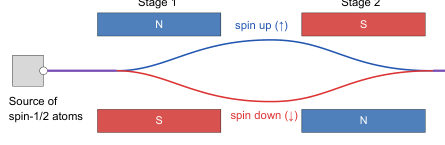
<figcaption class="paper-figure-caption"><b>Fig 1.</b> FIG. 1. Modified Stern-Gerlach interferometer for using the spin states as path markers. The spin, in addition, is en- tangled with an ancilla qubit. Another Stern-Gerlach setup is employed after this stage (no shown) with field in the x- direction, to implement quantum erasure before final detec- tion.</figcaption>
</figure>
<figure class="paper-figure-card">
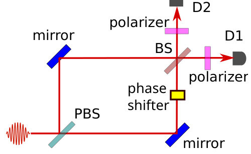
<figcaption class="paper-figure-caption"><b>Fig 2.</b> FIG. 2. Mach–Zehnder interferometer geometry. PBS1 cre- ates two path amplitudes |ψ1⟩, |ψ2⟩, BS2 recombines them, and output polarizers enable quantum-eraser post-selection before detection at D1, D2.</figcaption>
</figure>
</div>

<p><strong>Summary.</strong> This paper presents a novel, operational method to measure entanglement in qubit systems by analyzing interference experiments. It demonstrates that the entanglement content can be extracted directly from the measurable asymmetry observed in the output channels of both spin and photon interferometers. This unifies the understanding of decoherence, quantum erasure, and entanglement estimation into a single, compact framework.</p>
<p><strong>Why it may be interesting.</strong> This work provides a powerful, unified theoretical tool linking fundamental concepts like entanglement, decoherence, and quantum erasure into a single, experimentally testable diagnostic based on interference asymmetries.</p>
<details>
<summary>Detailed structure</summary>
<p><strong>Main problem.</strong> The paper aims to develop an operational and experimentally accessible method to quantify entanglement in qubit systems using interferometric measurements.</p>
<p><strong>Main result.</strong> It establishes a unified framework showing that entanglement, coherence loss, and quantum erasure are all governed by the same underlying correlation structure, allowing concurrence to be calculated directly from measurable output channel asymmetries.</p>
<p><strong>Method.</strong> The analysis uses a tripartite description involving paths, an internal qubit degree of freedom, and ancillary states, deriving the entanglement measure (concurrence) from the measured asymmetry of the output channels after quantum erasure.</p>
<p><strong>Model / system.</strong> The theory is applied to two distinct physical platforms: a modified Stern-Gerlach interferometer for spin-1/2 particles and a Mach-Zehnder interferometer for polarization-carrying photons.</p>
<p><strong>Key observables.</strong> The measurable asymmetry of the two output channels, which is directly related to the overlap of ancilla states ($ ext{Re}\langle\alpha|eta
angle$) and determines the concurrence.</p>
<p><strong>Important parameters / regimes.</strong> The overlap parameter $s = \langle\alpha|eta
angle$ and the resulting concurrence $C_2 = 1 - |\langle\alpha|eta
angle|^2$.</p>
<p><strong>Assumptions / limitations.</strong> The analysis assumes the ability to perform quantum erasure via measurement in a complementary basis and that the ancillary degree of freedom, while potentially inaccessible, dictates the measurable correlation structure.</p>
<p><strong>Figures summary.</strong> Figure 1 illustrates the modified Stern-Gerlach setup using spin states, while Figure 2 details the Mach-Zehnder interferometer geometry incorporating polarization post-selection for quantum erasure.</p>
<p><strong>Paper structure.</strong> The paper first introduces the tripartite model, applies it to the spin and photon interferometers, derives the relationship between the measured asymmetry and the overlap parameter, and finally establishes the universal operational entanglement law $C_2 = 1 - A^2$.</p>
</details>
<details>
<summary>Abstract</summary>
<p>An operational way of measuring entanglement in a balanced two-path interferometers is presented, where path information is carried by some internal degree of freedom which, in turn, gets entangled with an ancilla system. The analysis is based on a tripartite description involving paths, an internal qubit degree of freedom, and some ancillary states entangled with the internal degree of freedom. It is then applied to two physically distinct experimental situations: a modified Stern-Gerlach interferometer with spin-1/2 particles and a Mach-Zehnder interferometer with photons carrying polarization. The ancilla degree of freedom may not be experimentally accessible. Tracing out the ancillary system, and employing a quantum erasing procedure based on the internal degree of freedom, it is demonstrated that a concurrence-based measure of the entanglement, between the internal degree of freedom and the ancilla, can be extracted directly from measurable asymmetry of the two output channels. These results show that loss of coherence, quantum erasure, and entanglement estimation in interferometric experiments arise from the same underlying correlation structure and provide a compact experimentally accessible framework for quantifying entanglement in qubit systems.</p>
</details>
<p><sub><a href="#top">↑ back to top</a></sub></p>

<p><a id="paper-2606.04295"></a></p>
<h3 id="quantum-simulations-of-ultrafast-optical-spectroscopy-of-semiconductors-on-digital-quantum-computers-in-the-semi-classical-approximation"><a href="http://arxiv.org/abs/2606.04295v1">Quantum simulations of ultrafast optical spectroscopy of semiconductors on digital quantum computers in the semi-classical approximation</a></h3>
<p><strong>Authors:</strong> Mykhailo Klymenko, Bahar Goldozian, Thong Hoang, Jared H. Cole, Muhammad Usman<br>
<strong>Type:</strong> theory · <strong>Category:</strong> quantum information and computing · <strong>PDF:</strong> <a href="https://arxiv.org/pdf/2606.04295v1">https://arxiv.org/pdf/2606.04295v1</a><br>
<strong>Analysis basis:</strong> full PDF text, analyzed in chunks
<strong>Topic relevance:</strong> <code>methods for driven-dissipative</code> <strong>3/5</strong> · <code>non-equilibrium dynamics</code> <strong>3/5</strong> · <code>Keldysh / 2PI / non-Gaussian methods</code> <strong>2/5</strong> · <code>analog quantum simulation</code> <strong>1/5</strong> · <code>correlated / nonlocal dissipation</code> <strong>1/5</strong> · <code>driven-dissipative phase transition</code> <strong>1/5</strong> · <code>non-equilibrium universality</code> <strong>1/5</strong></p>
<div class="figure-strip-hint">↔ Scroll figures horizontally</div>
<div class="paper-figures-scroll">
<figure class="paper-figure-card">
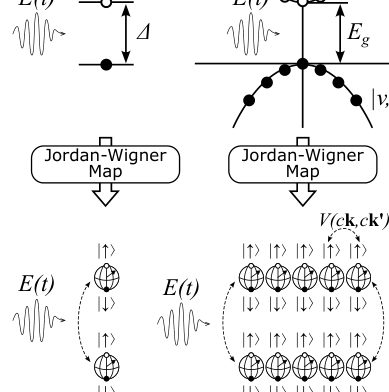
<figcaption class="paper-figure-caption"><b>Fig 1.</b> FIG. 1. Mapping spectroscopic experiments onto qubit Hamiltonian simulations for (a) a two-level system and (b) a direct-band two-band semiconductor. In the semiclassical ap- proximation, light–matter interactions are modeled through time-dependent induced dipole moments and implemented on a quantum computer using parameterized entangling two- qubit gates.</figcaption>
</figure>
<figure class="paper-figure-card">
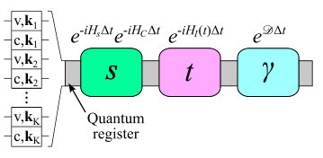
<figcaption class="paper-figure-caption"><b>Fig 2.</b> FIG. 2. Quantum circuit diagram for one Trotter step of the Hamiltonian simulation</figcaption>
</figure>
<figure class="paper-figure-card">
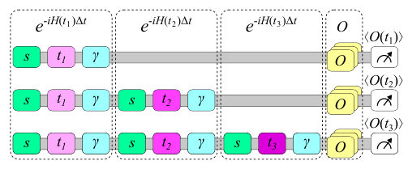
<figcaption class="paper-figure-caption"><b>Fig 3.</b> FIG. 3. Example quantum circuit for semiconductor time- domain spectroscopy simulations for N = 3 time steps. The gray ribbon denotes the quantum register of size 2K, where K is the number of wave vectors in the discretized Brillouin zone, and the factor of two corresponds to the number of energy bands.</figcaption>
</figure>
<figure class="paper-figure-card">
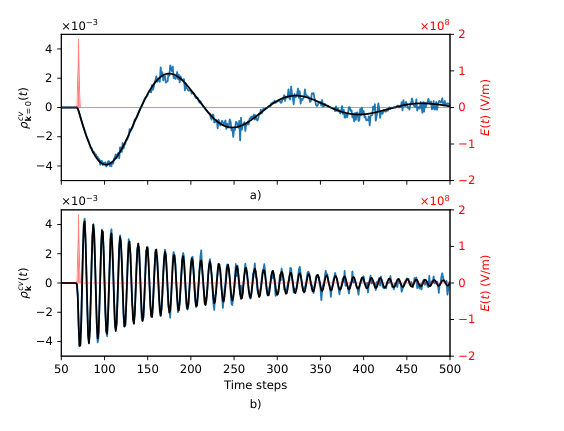
<figcaption class="paper-figure-caption"><b>Fig 4.</b> FIG. 5. Comparison of classical (black line) and quantum (blue line) simulations of the time evolution of the microscopic polarization for two wave vectors: (a) k = 0 nm−1 and (b) k = 5 nm−1 in a noiseless environment using 104 shots. The red trace indicates the temporal profile of the probe pulse.</figcaption>
</figure>
<figure class="paper-figure-card">
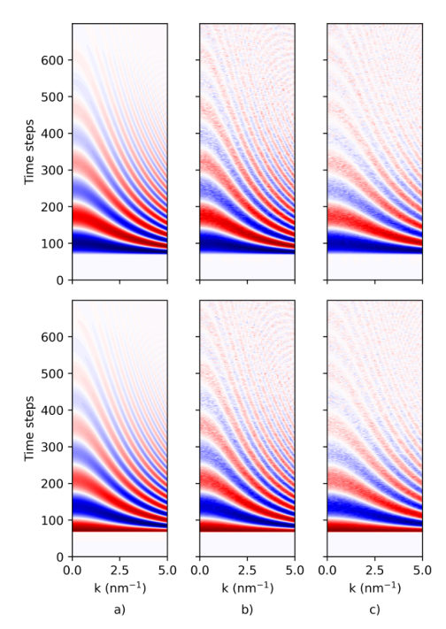
<figcaption class="paper-figure-caption"><b>Fig 5.</b> FIG. 4. Real (upper row) and imaginary (bottom row) parts of the microscopic polarization in semiconductor medium in- duced by an ultra-short Gaussian optical pulse. The results are presented for a) classical simulations, b) noiseless quan- tum simulations, and c) quantum simulations with realistic noise models.</figcaption>
</figure>
</div>

<p><strong>Summary.</strong> This work establishes a quantum simulation framework to model how semiconductors interact with ultrafast light pulses. By mapping the complex fermionic dynamics onto qubits, it allows for benchmarking quantum computers against established classical methods. The results demonstrate the framework's capability while critically analyzing the impact of realistic hardware noise on spectroscopic measurements.</p>
<p><strong>Why it may be interesting.</strong> It provides a concrete, physically motivated application for quantum computation—simulating complex, non-equilibrium quantum dynamics—and directly addresses the challenges of noise in near-term quantum hardware.</p>
<details>
<summary>Detailed structure</summary>
<p><strong>Main problem.</strong> Developing a digital quantum simulation framework to model ultrafast optical spectroscopy in semiconductor materials.</p>
<p><strong>Main result.</strong> The framework successfully simulates key spectroscopic features (absorption/gain) and shows quantitative agreement with classical methods in the noiseless limit, while also characterizing the impact of realistic NISQ noise.</p>
<p><strong>Method.</strong> The simulation maps the fermionic Hamiltonian onto qubits using the Jordan-Wigner transformation and evolves the system using the Suzuki-Trotter formula for time evolution.</p>
<p><strong>Model / system.</strong> The system is semiconductor materials (e.g., GaAs) modeled by a Hamiltonian including kinetic, Coulomb, and time-dependent light-matter interaction terms. The dynamics are treated as an open quantum system.</p>
<p><strong>Key observables.</strong> Induced dipole moment/polarization, electric susceptibility $\chi(\omega)$, and the linear absorption/optical gain spectra $\alpha(\omega)$.</p>
<p><strong>Important parameters / regimes.</strong> Ultrafast time scales, finite temperatures ($T=3$ K to $T=30$ K), and the presence of realistic hardware noise.</p>
<p><strong>Assumptions / limitations.</strong> The semiclassical approximation is used (classical field, quantum matter), and the simulation often relies on the quasi-equilibrium approximation for temperature effects.</p>
<p><strong>Figures summary.</strong> Figures compare microscopic polarization and linear absorption spectra across classical, noiseless quantum, and noisy quantum simulations for GaAs, illustrating the effect of noise and temperature.</p>
<p><strong>Paper structure.</strong> The paper progresses from defining the physical problem and Hamiltonian, detailing the theoretical mapping to qubits (JWT), outlining the time evolution via Trotterization, and finally presenting comparative results across different noise and temperature regimes.</p>
</details>
<details>
<summary>Abstract</summary>
<p>We present a digital quantum simulation framework for ultrafast optical spectroscopy of semiconductor materials. The framework is based on Brillouin-zone discretization and the second-quantization formalism, and is designed as a quantum alternative to classical simulations based on the semiconductor Bloch equations. Its current capabilities include quantum simulations of linear absorption and optical gain spectra, incorporating Lorentzian broadening, finite-temperature band-filling effects, and reduced-dimensionality effects. Benchmark comparisons with classical simulations for GaAs demonstrate quantitative agreement in the noiseless limit. The inclusion of realistic hardware noise of NISQ-era quantum computers effectively manifests itself as an additional source of scattering processes, resulting in increased spectral broadening. While no exponential quantum advantage is expected in the single-particle approximation, the framework naturally extends to many-body regimes where classical simulations face the hierarchy problem and exponential scaling and provable quantum advantage will be possible. The quantum simulations considered in this work capture central elements of semiconductor spectroscopy, the aspects such as open quantum systems, light-matter interactions, statistical mechanics, non-equilibrium quantum dynamics, and many-body physics. As such, it provides a physically motivated and scalable model for benchmarking quantum computers in applications to complex, real-world problems.</p>
</details>
<p><sub><a href="#top">↑ back to top</a></sub></p>

<p><a id="paper-2606.04958"></a></p>
<h3 id="cooper-quartets-and-fractional-vortices-in-frustrated-josephson-junction-dice-arrays"><a href="http://arxiv.org/abs/2606.04958v1">Cooper quartets and fractional vortices in frustrated Josephson junction dice arrays</a></h3>
<p><strong>Authors:</strong> Erik Lennart Weerda, Olav F. Syljuåsen, Matteo Rizzi, Michele Burrello<br>
<strong>Type:</strong> theory · <strong>Category:</strong> statistical mechanics · <strong>PDF:</strong> <a href="https://arxiv.org/pdf/2606.04958v1">https://arxiv.org/pdf/2606.04958v1</a><br>
<strong>Analysis basis:</strong> full PDF text, analyzed in chunks
<strong>Topic relevance:</strong> <code>analog quantum simulation</code> <strong>3/5</strong> · <code>methods for driven-dissipative</code> <strong>2/5</strong> · <code>Keldysh / 2PI / non-Gaussian methods</code> <strong>1/5</strong> · <code>driven-dissipative phase transition</code> <strong>1/5</strong> · <code>exotic spin models in light-matter</code> <strong>1/5</strong></p>
<div class="figure-strip-hint">↔ Scroll figures horizontally</div>
<div class="paper-figures-scroll">
<figure class="paper-figure-card">
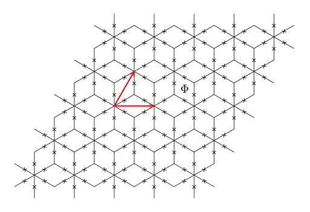
<figcaption class="paper-figure-caption"><b>Fig 1.</b> Figure 1. Illustration of a JJA in dice lattice geometry. The red arrows show the unit-cell vectors. By applying a perpendicular magnetic field to the array, a magnetic flux Φ can be threaded through every plaquette.</figcaption>
</figure>
<figure class="paper-figure-card">
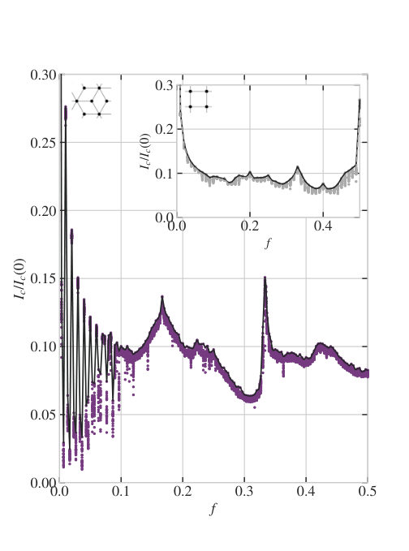
<figcaption class="paper-figure-caption"><b>Fig 2.</b> Figure 2. Critical currents as a function of frustration f for a 50 × 50 dice lattice calculated using the phase-bias relaxation method. The inset shows corresponding results for a 100×100 square lattice. The critical currents are normalized by Ic(0). Each purple dot shows the critical current obtained from a single phase configuration. A lower bound on the true critical current can be estimated by taking the maximum of these values (black line). The fringes at low values of f are finite- size effects.</figcaption>
</figure>
<figure class="paper-figure-card">
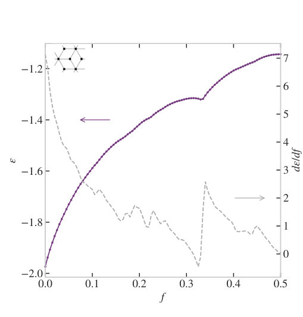
<figcaption class="paper-figure-caption"><b>Fig 3.</b> Figure 3. Energy per island (colored curve) and its derivative (grey) vs. f for a 50×50 dice lattice without source and drain islands, i.e. free boundary conditions, obtained by simulated annealing and a subsequent relaxation step, see App. A.</figcaption>
</figure>
<figure class="paper-figure-card">
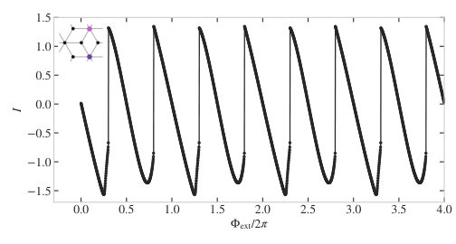
<figcaption class="paper-figure-caption"><b>Fig 4.</b> Figure 4. Typical current-phase relation for f = 1/3 for a phase-biased supercurrent between source (purple) and drain (pink) islands situated in the middle of a 50 × 50 dice lattice. I is expressed in units of 2e</figcaption>
</figure>
<figure class="paper-figure-card">
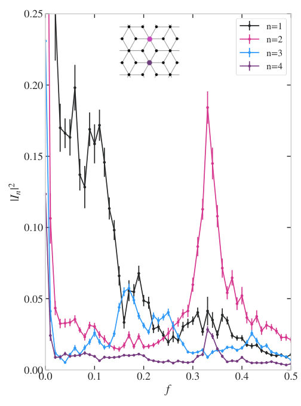
<figcaption class="paper-figure-caption"><b>Fig 5.</b> Figure 5. Harmonics of the supercurrent across a single rhom- bus as a function of f. The source and drain islands for this supercurrent are highlighted in purple (source) and pink (drain) in the inset. These islands are situated in the middle of a 50 × 50 dice lattice, and the supercurrent is determined by the introduction of a phase bias between them, see App. A. Points and error bars indicate the mean and standard error of the mean from 100 independent simulations for each value of f.</figcaption>
</figure>
</div>

<p><strong>Summary.</strong> This paper analyzes superconducting behavior in frustrated Josephson junction dice arrays, predicting that the system enters a $4e$ superconducting phase when frustrated at $f=1/3$. By using advanced numerical and theoretical methods, the authors confirm this $4e$ state through the dominance of the second supercurrent harmonic and the algebraic decay of the corresponding correlation function.</p>
<p><strong>Why it may be interesting.</strong> The work provides a concrete, tunable platform (JJ arrays) to study fractional charge carriers and topological order, bridging concepts from superconductivity, frustrated magnetism, and quantum phase transitions.</p>
<details>
<summary>Detailed structure</summary>
<p><strong>Main problem.</strong> The study investigates the emergence of exotic superconducting phases mediated by Cooper quartets ($4e$) in frustrated Josephson junction (JJ) dice arrays.</p>
<p><strong>Main result.</strong> The critical current peaks at a frustration of $f=1/3$ are linked to a superconductor-insulator transition compatible with half-vortex deconfinement, confirming the onset of a $4e$ superconducting phase.</p>
<p><strong>Method.</strong> The research employs a combination of numerical simulations (relaxation dynamics), Monte Carlo techniques, and advanced theoretical tools like infinite tensor networks and Renormalization Group (RG) analysis.</p>
<p><strong>Model / system.</strong> The system is a Josephson junction array (JJA) on a dice lattice, modeled by an XY Hamiltonian. The analysis focuses on the effect of magnetic frustration ($f$) and the competition between $2e$ (Cooper pair) and $4e$ (Cooper quartet) superconducting correlations.</p>
<p><strong>Key observables.</strong> Critical current ($I_c$), critical temperature ($T_c$), supercurrent harmonics ($I_1$ vs $I_2$), and correlation functions ($  ilde{C}<em 4e>{2e}(r)$ vs $   ilde{C}</em>(r)$).</p>
<p><strong>Important parameters / regimes.</strong> Magnetic frustration ($f$), charging energy ($E_C$), Josephson energy ($E_J$), and temperature ($T$).</p>
<p><strong>Assumptions / limitations.</strong> The analysis often assumes negligible charging energy for the classical XY model description, though later sections incorporate $E_C$ effects.</p>
<p><strong>Figures summary.</strong> Figures illustrate the dice lattice geometry, the dominance of the $I_2$ (quartet) component at $f=1/3$, and the algebraic decay of the $4e$ correlation function ($  ilde{C}_{4e}(r)$).</p>
<p><strong>Paper structure.</strong> The paper progresses from establishing the physical model and analyzing the critical current dependence on frustration ($f$), to characterizing the supercurrent harmonics ($I_1$ vs $I_2$), and finally delving into the quantum nature using correlation functions and RG analysis to confirm the $4e$ phase.</p>
</details>
<details>
<summary>Abstract</summary>
<p>Superconductivity mediated by Cooper quartets of charge 4e is a phenomenon of key importance for both the understanding of certain exotic superconductors and the engineering of quantum memories protected at the hardware level by topological order. Josephson junction arrays in the shape of the dice lattice constitute one of the main candidates for the realization of this phase of matter. Here, we analyze numerical signatures of the emergence of this exotic phase when superconducting dice arrays are frustrated by inserting one third of a flux quantum per rhombic plaquette. We adopt simulations of relaxation dynamics to study the critical current of such devices and analyse the Fourier decomposition of their bulk supercurrents. A further characterization of these systems at finite temperature is obtained through Monte Carlo techniques and two-dimensional infinite tensor networks. Our results indicate that the observed peaks of the critical current and temperature at frustration 1/3 correspond to a superconductor-insulator phase transition compatible with the deconfinement of half-vortices, while the low-temperature correlation functions of the model confirm the onset of a 4e superconducting phase mediated by Cooper quartets. We finally address the effects of Josephson energy and flux disorder typical of experimental arrays, and comment on the role of charging energies in the corresponding two-dimensional quantum model.</p>
</details>
<p><sub><a href="#top">↑ back to top</a></sub></p>

<p><a id="paper-2606.05066"></a></p>
<h3 id="fermionic-non-gaussianity-via-bell-sampling-monotones-and-efficient-quantum-algorithms"><a href="http://arxiv.org/abs/2606.05066v1">Fermionic non-Gaussianity via Bell sampling: monotones and efficient quantum algorithms</a></h3>
<p><strong>Authors:</strong> Poetri Sonya Tarabunga<br>
<strong>Type:</strong> theory · <strong>Category:</strong> quantum information and computing · <strong>PDF:</strong> <a href="https://arxiv.org/pdf/2606.05066v1">https://arxiv.org/pdf/2606.05066v1</a><br>
<strong>Analysis basis:</strong> full PDF text, analyzed in chunks
<strong>Topic relevance:</strong> <code>entanglement &amp; information structure</code> <strong>3/5</strong> · <code>Keldysh / 2PI / non-Gaussian methods</code> <strong>2/5</strong> · <code>analog quantum simulation</code> <strong>1/5</strong> · <code>quantum measurements</code> <strong>1/5</strong></p>
<div class="figure-strip-hint">↔ Scroll figures horizontally</div>
<div class="paper-figures-scroll">
<figure class="paper-figure-card">
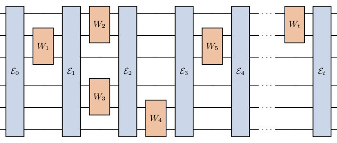
<figcaption class="paper-figure-caption"><b>Fig 1.</b> FIG. 1. A t-doped Gaussian protocol. Blue boxes E0, E1, . . . , Et denote arbitrary Gaussian protocols, possibly with post-selection; orange boxes W1, W2, . . . , Wt are non-Gaussian gates, each acting on two qubits (four Majorana modes) in arbitrary locations.</figcaption>
</figure>
</div>

<p><strong>Summary.</strong> This work develops a resource theory for fermionic non-Gaussianity using the 'bridge degree' monotone, derived from the eigenvalue structure of a specific operator accessible via Bell sampling. It proves this degree is irreversible under Gaussian operations, yielding strong lower bounds for tasks like state preparation. The paper culminates in efficient, sample-efficient quantum algorithms to test for Gaussianity and certify the 2-design property using this measure.</p>
<p><strong>Why it may be interesting.</strong> It provides a concrete, measurable, and theoretically robust resource measure (the bridge degree) for fermionic quantum computation, directly linking structural properties to computational resource costs.</p>
<details>
<summary>Detailed structure</summary>
<p><strong>Main problem.</strong> The paper aims to quantify fermionic non-Gaussianity, which is a crucial resource for achieving quantum computational advantage beyond classical simulation capabilities.</p>
<p><strong>Main result.</strong> They introduce the 'bridge degree' as a novel, computable, and irreversible non-Gaussianity monotone, establishing strong lower bounds on the non-Gaussian gate cost for state preparation and 2-design certification.</p>
<p><strong>Method.</strong> The analysis centers on the eigenvalue structure of the 'bridge operator' ($\Lambda$) acting on two copies of the fermionic state, which is accessible via Bell sampling measurements.</p>
<p><strong>Model / system.</strong> The system is based on fermionic quantum computation, utilizing fermionic Gaussian unitaries (matchgates) acting on $n$-mode fermionic states, often restricted to 'even' states.</p>
<p><strong>Key observables.</strong> Bridge degree ($\Lambda_d(\psi)$), approximate bridge degree ($\Lambda_{d,\epsilon}(\psi)$), and the bridge spectral distribution ($p_\psi(\lambda)$).</p>
<p><strong>Important parameters / regimes.</strong> The complexity scales are related to $n$ (number of modes), $\epsilon$ (approximation error), and $\delta$ (failure probability).</p>
<p><strong>Assumptions / limitations.</strong> The primary assumption is that the resource theory framework can be successfully mapped onto the eigenvalue structure of the bridge operator, and that Bell sampling provides an efficient measurement tool.</p>
<p><strong>Figures summary.</strong> Not specified, but the notes reference TABLE I summarizing various non-Gaussianity monotones and their properties.</p>
<p><strong>Paper structure.</strong> The paper develops the bridge degree monotone, proves its monotonicity under Gaussian protocols (establishing irreversibility), derives lower bounds for state preparation and 2-design costs, and finally presents efficient Bell-sampling algorithms for testing Gaussianity and 2-design properties.</p>
</details>
<details>
<summary>Abstract</summary>
<p>Fermionic non-Gaussianity is an essential resource for unlocking the full computational power of fermionic quantum platforms. In this work we develop monotones and efficient quantum algorithms for fermionic non-Gaussianity, all built on the eigenvalue structure of the operator $Λ= \sum_{j=1}^{2n}γ_j\otimesγ_j$ defined on two copies of an $n$-mode fermionic state, accessible via Bell sampling. In particular, we introduce the \emph{bridge degree} of even pure states, a novel non-Gaussianity monotone defined as the largest eigenvalue sector of $Λ$ populated by two copies of the state. Our key technical result is that the bridge degree is non-increasing under post-selected Gaussian protocols, which yields no-go theorems for Gaussian conversion stronger than those obtainable from previously known monotones and shows that the resource theory of fermionic non-Gaussianity is irreversible in the exact-conversion setting. Beyond this, the bridge degree exhibits several further features: it (i) is easy to compute, (ii) is efficiently witnessed through Bell sampling, (iii) lower-bounds the non-Gaussian gate complexity of state preparation, (iv) controls the non-Gaussian gate complexity of producing quantum state designs, and (v) naturally extends to mixed states via the Choi--Jamiołkowski isomorphism. We further develop an approximate variant together with an efficiently measurable lower bound, yielding an experimentally certifiable lower bound on the non-Gaussian cost of approximately preparing any state, based directly on Bell-sampling data. Finally, the same eigenvalue structure underlies two Bell-sampling-based algorithmic primitives, both with polynomial sample complexity: a two-copy Gaussianity test with perfect completeness, optimal among two-copy tests sharing this property, and a test for the state $2$-design property of matchgate-invariant ensembles.</p>
</details>
<p><sub><a href="#top">↑ back to top</a></sub></p>

<p><a id="paper-2606.04211"></a></p>
<h3 id="high-dimensional-quantum-key-distribution-via-full-core-mode-encoding-over-deployed-multicore-fibers"><a href="http://arxiv.org/abs/2606.04211v1">High-Dimensional Quantum Key Distribution via full Core-mode Encoding over Deployed Multicore Fibers</a></h3>
<p><strong>Authors:</strong> G. H. dos Santos, K. B. Sawada, N. Villalba, C. Jara, N. Guerrero, C. Melo, M. H. Magiotto, D. Martínez, G. B. Xavier, J. Cariñe, G. Saavedra, E. S. Gómez, S. P. Walborn, G. Lima<br>
<strong>Type:</strong> experiment · <strong>Category:</strong> quantum information and computing · <strong>PDF:</strong> <a href="https://arxiv.org/pdf/2606.04211v1">https://arxiv.org/pdf/2606.04211v1</a><br>
<strong>Analysis basis:</strong> full PDF text, analyzed in chunks
<strong>Topic relevance:</strong> <code>QC/QI experiment</code> <strong>3/5</strong> · <code>quantum optics experiment</code> <strong>3/5</strong> · <code>interference shaping light</code> <strong>1/5</strong></p>
<div class="figure-strip-hint">↔ Scroll figures horizontally</div>
<div class="paper-figures-scroll">
<figure class="paper-figure-card">
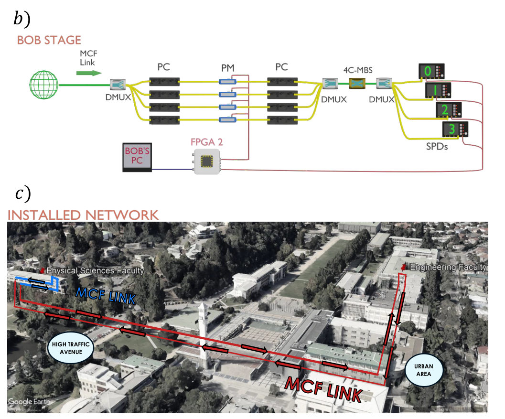
<figcaption class="paper-figure-caption"><b>Fig 1.</b> FIG. 1. Schematic of the core-encoded four-dimensional QKD system and network. Alice (a) prepares four-dimensional qudit states; Bob (b) measures them in two different bases. (c) The states are transmitted through different links of an MCF network installed over the campus of the Universidad de Concepci´on, Chile. PC: Polarization Controller; PM: Phase Modulator; IM: Intensity Modulator; Att: Optical Attenuator; MCF: Multicore Fiber; MUX/DMUX: MCF Multiplexer/Demultiplexer; 4C- MBS: Four-Core Multiport Beam Splitter; SPD: Single-Photon Detector.</figcaption>
</figure>
<figure class="paper-figure-card">
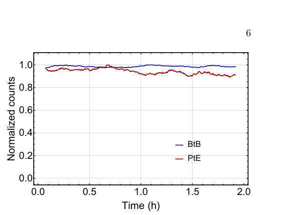
<figcaption class="paper-figure-caption"><b>Fig 2.</b> FIG. 2. Polarization stability of the deployed links. Nor- malized single-photon count rate, integrated in 100ms bins, recorded with a fixed polarization analyzer for the back- to-back (BtB) configuration and the installed Physics-to- Engineering (PtE) link. After an initial manual alignment, no active polarization control is applied. The count rate remains stable over more than two hours in both settings, demonstrat- ing that environmental drifts in the laboratory and across the deployed campus link are slow compared with the duration of a typical QKD session.</figcaption>
</figure>
<figure class="paper-figure-card">

<figcaption class="paper-figure-caption"><b>Fig 3.</b> FIG. 3. Characterization of the PtE MCF link. (a) Free evo- lution of the transmitted state over ∼20 s, reconstructed via sequential quantum state tomography (for the first input state defined in Fig. 7). Each projector is integrated for 100 ms, and a full tomographic reconstruction is completed in ∼400 ms. The slow phase drifts induced by thermal and mechanical per- turbations can be seen as unitary rotations of the prepared state, progressively degrading its overlap with the target. (b) Tomographic reconstructions acquired within a single 100 ms interval following the preparation of the same input state, re- peated over 50 independent realizations. The reconstructed states exhibit a mean...</figcaption>
</figure>
<figure class="paper-figure-card">

<figcaption class="paper-figure-caption"><b>Fig 4.</b> Fig. 3(a) spans a total time of 20 s of channel evolution. The slow phase drifts can be seen as random rotations on the states prepared by Alice, which leads to errors in Bob’s measurement outcomes and thus an increased QBER in a QKD session. Importantly, we find that these phases are stable over periods of at least 100 ms, which is the key property that makes a 100 ms acquisition window viable. This can be seen in Fig. 3(b), where the tomo- graphies are now performed during the time window of 100 ms after the same Alice’s state has been prepared. A procedure that has been repeated 50 times. In this case, high overall fidelities and purities are obtained for the re- constructed states with...</figcaption>
</figure>
<figure class="paper-figure-card">

<figcaption class="paper-figure-caption"><b>Fig 5.</b> FIG. 5. Asymptotic key rate (bits/pulse) vs. channel attenua- tion while using InGaAs SPDs and SNSPDs. Points: recorded experimental rates. Curve: asymptotic model. (◦) represents the results for the BtB link; (□) represents the results for the P6 link; (△) represents the results for PtE link and; (♢) rep- resents the results for channels with extra attenuation to test the viability for secret key generation with higher losses. The key generation values are given explicitly in Appendix C.</figcaption>
</figure>
</div>

<p><strong>Summary.</strong> This paper demonstrates a high-dimensional Quantum Key Distribution (HD-QKD) protocol by directly exploiting all core modes of a multicore fiber network. By achieving a record-high key rate over a deployed campus link, the authors prove that core-mode encoding is a practical and efficient method for building next-generation quantum-secure communication networks.</p>
<p><strong>Why it may be interesting.</strong> The work directly addresses the practical implementation of quantum communication protocols in existing infrastructure, providing concrete rate benchmarks that are highly relevant to quantum network engineering.</p>
<details>
<summary>Detailed structure</summary>
<p><strong>Main problem.</strong> To demonstrate high-dimensional quantum key distribution (HD-QKD) with high rates and robustness over deployed, real-world communication infrastructure.</p>
<p><strong>Main result.</strong> The authors achieved a record finite-key rate of $6.19 	imes 10^{-3}$ bits/pulse at 10 dB loss, establishing core-mode encoding as a viable architecture for high-rate quantum-secure communications.</p>
<p><strong>Method.</strong> The protocol uses a two-decoy finite-key method, employing inverse Chernoff bounds to estimate the secret key length, which is then applied to experimentally measured detection counts.</p>
<p><strong>Model / system.</strong> The system utilizes Multicore Fibers (MCFs) as the physical platform, encoding information across the full set of available core modes ($d=4$). The setup involves complex phase and spatial modulation across these multiple cores.</p>
<p><strong>Key observables.</strong> Composable finite-key rate ($R = 6.19 	imes 10^{-3}$ bits/pulse), Quantum Bit Error Rate (QBER), and state fidelity ($ar{F} = 0.96 \pm 0.01$).</p>
<p><strong>Important parameters / regimes.</strong> Dimension ($d=4$), Channel Loss (tested at 10 dB), and security parameters ($\epsilon_{sec}, \epsilon_{cor}$).</p>
<p><strong>Assumptions / limitations.</strong> The analysis uses advanced finite-key bounding techniques (Zhang et al. [27]) that avoid assumptions of Gaussian fluctuation profiles, which is crucial for accuracy.</p>
<p><strong>Figures summary.</strong> Figures illustrate polarization stability over time, QBER distributions fitted with Beta distributions, and comparisons of achieved key rates against previous state-of-the-art demonstrations.</p>
<p><strong>Paper structure.</strong> The paper details the physical setup (MCF deployment), the theoretical framework for finite-key rate estimation using decoy states and Chernoff bounds, the experimental measurements across various link lengths, and the final comparison of the achieved rate against benchmarks.</p>
</details>
<details>
<summary>Abstract</summary>
<p>Quantum key distribution (QKD) provides information-theoretic security rooted in quantum physics, while high-dimensional (HD) encoding increases both noise tolerance and secret-key yield. Multicore fibers (MCFs), a leading platform for next-generation telecom networks, are a natural substrate for HD-QKD. Field demonstrations over deployed MCFs have so far relied on a hybrid qudit encoding strategy that combines two path (core modes) with the time-bin photonic degree of freedom, rather than exploiting the full set of available core modes. Although practical, this approach incurs intrinsic efficiency penalties that grow with dimension. Here we implement a four-dimensional ($d=4$) QKD protocol that directly exploits the full set of core modes of a four-core MCF, operating over an installed MCF network across the Universidad de Concepción campus under continuous environmental perturbations. We further benchmark the scheme using superconducting nanowire detectors at $10\,$dB channel loss, achieving a composable finite-key rate of $R = 6.19\times 10^{-3}\,$bits/pulse, the highest per-pulse rate reported to date for HD-QKD at comparable loss. This result establishes core-mode encoding as a viable architecture for realistic, high-rate quantum-secure communications.</p>
</details>
<p><sub><a href="#top">↑ back to top</a></sub></p>

<p><a id="paper-2606.04354"></a></p>
<h3 id="photon-shot-noise-limited-rydberg-eit-electrometry"><a href="http://arxiv.org/abs/2606.04354v1">Photon shot-noise-limited Rydberg-EIT electrometry</a></h3>
<p><strong>Authors:</strong> Gyeongmin Ju, Ye Jin Yu, Heewoo Kim, Hansol Jeong, Jinhyuk Bae, Changhoon Baek, Han Seb Moon<br>
<strong>Type:</strong> experiment · <strong>Category:</strong> other · <strong>PDF:</strong> <a href="https://arxiv.org/pdf/2606.04354v1">https://arxiv.org/pdf/2606.04354v1</a><br>
<strong>Analysis basis:</strong> full PDF text, analyzed in chunks
<strong>Topic relevance:</strong> <code>quantum optics experiment</code> <strong>3/5</strong> · <code>Rydberg arrays</code> <strong>1/5</strong> · <code>analog quantum simulation</code> <strong>1/5</strong> · <code>interference shaping light</code> <strong>1/5</strong> · <code>quantum measurements</code> <strong>1/5</strong></p>
<div class="figure-strip-hint">↔ Scroll figures horizontally</div>
<div class="paper-figures-scroll">
<figure class="paper-figure-card">

<figcaption class="paper-figure-caption"><b>Fig 1.</b> Fig. 2. Effect of magnetic-field compensation on the Rydberg-EIT response. (a) Measured EIT transmission spectra with (red) and without (blue) magnetic-field compensation, showing linewidth narrowing and increased peak transmission. (b) Dependence of the EIT peak amplitude (top) and linewidth (bottom) on the probe laser power, compared with (red) and without (blue) the compensation. The solid lines represent theoretical fits to the experimental data.</figcaption>
</figure>
<figure class="paper-figure-card">

<figcaption class="paper-figure-caption"><b>Fig 2.</b> Fig. 3. Atomic superheterodyne response of the Rydberg-EIT system. (a) Autler- Townes splitting with a strong LO (blue) and with an additional weak signal field (red). (b) Time-domain probe transmission measured at the operating point in (a), showing a clear oscillation at the LO–signal frequency difference (40 kHz), while the LO-only signal remains stable.</figcaption>
</figure>
<figure class="paper-figure-card">

<figcaption class="paper-figure-caption"><b>Fig 3.</b> Fig. 4. Electric-field sensitivity and probe-power optimization. (a) Measured electric- field response using AT splitting (red) and superheterodyne detection (blue), showing linear agreement with the calculated field. (b) Extracted slope of the response as a function of probe power. (c) Minimum detectable signal amplitude. (d) Electric-field sensitivity, exhibiting an optimum at 6 μW near the photon shot-noise limit.</figcaption>
</figure>
<figure class="paper-figure-card">

<figcaption class="paper-figure-caption"><b>Fig 4.</b> Figure 5(b) compares the experimentally measured electric-field sensitivity (blue circles) with the calculated PSN limit (red dashed line), as a function of probe power under the experimental temperature condition. The measured sensitivity follows the same overall trend as the calculated shot-noise limit, confirming that the dominant noise source is consistent with</figcaption>
</figure>
<figure class="paper-figure-card">

<figcaption class="paper-figure-caption"><b>Fig 5.</b> Fig. 5. Comparison with the photon shot-noise (PSN) limit. (a) Calculated atom number (blue) and PSN-limited sensitivity (red) as a function of vapor-cell temperature. (b) Measured sensitivity (blue) and calculated PSN limit (red dashed line) versus probe power, showing agreement near the optimal operating point. The sensitivity approaches the shot- noise limit near 6 μW (green circle).</figcaption>
</figure>
</div>

<p><strong>Summary.</strong> This paper reports on the experimental realization of a highly sensitive electric-field sensor using Rydberg-atom Electromagnetically Induced Transparency (EIT) in a rubidium vapor cell. By meticulously engineering the atomic coherence and employing superheterodyne detection, the authors successfully suppressed technical noise sources. They achieved an electric-field sensitivity matching the fundamental photon shot-noise limit, marking a significant step toward practical quantum-limited sensing.</p>
<p><strong>Why it may be interesting.</strong> This work is highly relevant as it pushes the boundaries of quantum sensing by experimentally verifying the theoretical limit imposed by quantum noise (shot noise) in a complex atomic system, providing a blueprint for quantum-limited measurements.</p>
<details>
<summary>Detailed structure</summary>
<p><strong>Main problem.</strong> The primary goal is to develop and experimentally demonstrate a highly sensitive quantum electric-field sensor using Rydberg-atom electrometry that approaches the fundamental photon shot-noise limit.</p>
<p><strong>Main result.</strong> The authors achieved an electric-field sensitivity of 12.5(8) nV cm^-1 Hz^-1/2, which is in close agreement with the calculated photon shot-noise limit, establishing a practical route for quantum-noise-limited sensing.</p>
<p><strong>Method.</strong> The experiment utilizes a superheterodyne detection scheme applied to Rydberg Electromagnetically Induced Transparency (EIT) in an atomic vapor cell, requiring active compensation of external magnetic and laser noise.</p>
<p><strong>Model / system.</strong> The system is based on a cascade-type EIT scheme in an 85Rb atomic vapor cell, leveraging the strong, controllable interactions in Rydberg states to enhance the electric-field coupling.</p>
<p><strong>Key observables.</strong> Electric-field sensitivity (nV cm^-1 Hz^-1/2), EIT linewidth (achieved 1.6 MHz), and the spectral slope ($\kappa_0$) of the EIT response.</p>
<p><strong>Important parameters / regimes.</strong> Photon Shot-Noise (PSN) limit, Rydberg-EIT linewidth, and the optimal probe power for maximizing signal-to-noise ratio.</p>
<p><strong>Assumptions / limitations.</strong> The analysis assumes that the dominant noise source limiting sensitivity is the probe-photon shot noise, and that the system can be engineered to minimize technical noise sources like magnetic field fluctuations.</p>
<p><strong>Figures summary.</strong> Figures illustrate the energy-level diagram and experimental setup, compare EIT spectra with and without magnetic field compensation (showing linewidth narrowing), and detail the superheterodyne time-domain response and the dependence of sensitivity on probe power.</p>
<p><strong>Paper structure.</strong> The paper progresses by first establishing the basic EIT sensing mechanism, then detailing the necessity and implementation of magnetic field compensation to narrow the linewidth, and finally optimizing the superheterodyne detection scheme to quantify the sensitivity relative to the theoretical PSN limit.</p>
</details>
<details>
<summary>Abstract</summary>
<p>Rydberg-atom electrometry is a core technique in the development of highly sensitive quantum electric-field sensors. Its sensitivity based on atom-photon interaction is typically limited by photon shot-noise (PSN) and spectral broadenings. Here, we experimentally demonstrate a near PSN-limited Rydberg electrometry from a 85Rb atomic vapor cell. By engineering atomic coherence through control of residual magnetic fields and laser frequency noise, we achieve the Rydberg electromagnetically induced transparency (EIT) with the narrow linewidth of 1.6 MHz, yielding an enhanced spectral slope for high-sensitivity Rydberg-EIT electrometry. Under optimized superheterodyne detection conditions, we obtain an electric-field sensitivity of 12.5(8) nV cm^-1 Hz^-1/2 at 37 GHz, in close agreement with the calculated PSN limit. These results provide direct experimental evidence of the high-sensitive quantum electrometry and establish a practical route toward quantum-noise-limited Rydberg electrometry.</p>
</details>
<p><sub><a href="#top">↑ back to top</a></sub></p>

<p><a id="paper-2606.04497"></a></p>
<h3 id="arbitrary-manipulation-of-nuclear-spins-in-hexagonal-boron-nitride"><a href="http://arxiv.org/abs/2606.04497v1">Arbitrary manipulation of nuclear spins in hexagonal boron nitride</a></h3>
<p><strong>Authors:</strong> Fattah Sakuldee, Mehdi Abdi<br>
<strong>Type:</strong> theory · <strong>Category:</strong> quantum information and computing · <strong>PDF:</strong> <a href="https://arxiv.org/pdf/2606.04497v1">https://arxiv.org/pdf/2606.04497v1</a><br>
<strong>Analysis basis:</strong> full PDF text, analyzed in chunks
<strong>Topic relevance:</strong> <code>QC/QI experiment</code> <strong>3/5</strong> · <code>spintronics-quantum-optics interface</code> <strong>3/5</strong></p>
<div class="figure-strip-hint">↔ Scroll figures horizontally</div>
<div class="paper-figures-scroll">
<figure class="paper-figure-card">

<figcaption class="paper-figure-caption"><b>Fig 1.</b> FIG. 2. (a) Fidelity of gate X1 under dephasing as a function of control period τ and evolution time t, with the cyan dot indicating the global maximum. (b) Fidelity of X1 and Y1 with (dashed) and without (solid) dephasing at the optimal point. The inset shows X1 fidelity dynamics for optimal τ. In (c) and (d), the infidelity profiles 1 −F for various single- and multi-qubit gates are plotted versus evolution time for optimized τ. The black dash-dotted lines in (b) to (d) indicate the infidelity of the identity gate as a reference.</figcaption>
</figure>
<figure class="paper-figure-card">

<figcaption class="paper-figure-caption"><b>Fig 2.</b> FIG. 3. The infidelity 1 −F of the single-qubit conditional gates (a) CX1, CX2, CH1, and CT1, (b) the two-qubit gates CX1X2 and CX2X3, and the three-qubit gates CXXX and Hadamard gate CHHH.</figcaption>
</figure>
<figure class="paper-figure-card">

<figcaption class="paper-figure-caption"><b>Fig 3.</b> FIG. 4. A consideration on the cluster of an electron spin (red ball) residing at the vacancy center and three nearest spins (green balls N1 to N3) embedded in VB-hB15N, is en- abled by their strong interactions relative to other terms. An adequately strong magnetic field B is applied in-plane at the angle ϕ from the dangling bond−2 connecting the central spin and the nuclear spin N2, where the effective fields ak are given by the blue arrows. Likewise, θk denotes the angles from the magnetic field direction and the dangling bond−k. For the coordinate of the electron spin operator, we define an axis ˆz in the direction of the magnetic field, whereas we define spin operators in terms of...</figcaption>
</figure>
<figure class="paper-figure-card">

<figcaption class="paper-figure-caption"><b>Fig 4.</b> FIG. 5. The distributions of the ratio ωn/ak for various magnetic field strengths B and its orientation ϕ for nuclear spins N1 to N3. Here one can see the equivalence among the three spins, e.g., the translation of the angle ϕ by π/6 will result in a permutation of the spin labels k. The cyan dashed lines and dots indicate the points corresponding to the B = 250 mT and ϕ = 9π/2 used in the example in our calculation.</figcaption>
</figure>
<figure class="paper-figure-card">

<figcaption class="paper-figure-caption"><b>Fig 5.</b> FIG. 6. The characteristics of the coherence function in the frequency domain c WT (ω) with T ∼1.6 µs in its normalized unit. For a fixed magnetic field strength B = 250 mT and the coherence rate Γ = 0.5 MHz, we can see the distinct peaks (a) for various orientations ϕ except at the points where ϕ is a multiple of π/6, i.e., the magnetic field is parallel or perpendicular to one of the dangling bonds. The distance between two adjacent peaks is larger for the larger magnetic field strength for a fixed angle ϕ = 9π/2 (b), given the coherence rate Γ = 0.5 MHz, reflecting that the strong magnetic field provides more robust separation between two nuclear spins. The peaks can be estimated by the...</figcaption>
</figure>
</div>

<p><strong>Summary.</strong> This paper proposes a detailed quantum control protocol for manipulating nuclear spins in boron vacancy centers within hBN. By leveraging the electron spin as a mediator, the authors engineer controlled interactions to implement high-fidelity single- and multi-qubit gates. The results demonstrate that the scheme is fast enough to evade electron spin decoherence, paving the way for quantum computation in this solid-state platform.</p>
<p><strong>Why it may be interesting.</strong> This work directly addresses the challenge of scalable quantum memory and gate operations in solid-state systems, which is a major focus area for quantum information scientists.</p>
<details>
<summary>Detailed structure</summary>
<p><strong>Main problem.</strong> The paper aims to develop a robust protocol for implementing arbitrary single- and multi-qubit quantum gates on the nuclear spins within a hexagonal boron nitride (hBN) platform.</p>
<p><strong>Main result.</strong> A protocol was established that achieves high gate fidelities (up to 99% for single-qubit gates) with short gate execution times (&lt; 300 ns), enabling practical quantum computation using boron vacancy centers.</p>
<p><strong>Method.</strong> The protocol utilizes the electron spin as an auxiliary qubit, employing multi-tone continuous drives and Hahn echo pulse sequences to engineer and control the electron-nuclear coupling.</p>
<p><strong>Model / system.</strong> The system is based on negatively charged boron vacancy centers ($  ext{V}_ ext{B}^-$) in hBN, modeled by a total Hamiltonian involving electron ($\hat{H}_e$), nuclear ($\hat{H}_n$), and interaction ($\hat{H}_i$) terms. The dynamics are analyzed by reducing the system to an effective two-level electron subspace.</p>
<p><strong>Key observables.</strong> Gate fidelities (up to 99% single-qubit, 95% multi-qubit), gate execution duration (&lt; 300 ns), and the coherence function $C_{WT}(\omega)$ for spin distinction.</p>
<p><strong>Important parameters / regimes.</strong> Moderate background magnetic field ($B \sim 0.1-1 	ext{ T}$), and the decoherence rate ($\Gamma$) which must be overcome by fast gate operations.</p>
<p><strong>Assumptions / limitations.</strong> The analysis assumes the ability to suppress undesired electron-nuclear interactions using Hahn echo sequences and relies on the electron spin being fast enough to execute gates before decoherence.</p>
<p><strong>Figures summary.</strong> Figures illustrate the spin cluster geometry, the dependence of gate infidelity on time and decoherence rate, and the coherence function showing distinct peaks for individual spin addressing.</p>
<p><strong>Paper structure.</strong> The work progresses by first defining the Hamiltonian and the physical system, then detailing the gate implementation protocol using RF drives and Hahn echo sequences, and finally presenting numerical results demonstrating high fidelity and fast operation times.</p>
</details>
<details>
<summary>Abstract</summary>
<p>Due to its localized nature and controllability, the negatively charged boron vacancy centers (V$_\text{B}^-$) in hexagonal boron nitride (hBN) are a promising spin platform for accessing its neighboring nuclei with potential for performing quantum computational tasks. However, the methods of utilizing and manipulating the nuclear spins are still lacking. In this work, we propose a protocol for the preparation of single- and multi-qubit gates on the nuclear spins, utilizing the electron spin as an auxiliary qubit. By applying a background magnetic field and a multi-tone continuous drive, we show that the electron spin coupling to the nuclei can be efficiently engineered. This allows for suppressing the undesired electron-nuclear interactions through the Hahn echo pulse sequence. The target gates are then implemented by employing proper RF drives. Our numerical results for realistic parameters show gate fidelities as high as $99\%$ for single-qubit and $95\%$ for multi-qubit gates. With the gate execution durations being less than $300$ ns, our protocol evades electron spin decoherence effects. Therefore, our scheme sets the stage for the practical application of V$_\text{B}^-$ in hBN for quantum computation purposes.</p>
</details>
<p><sub><a href="#top">↑ back to top</a></sub></p>

<p><a id="paper-2606.04897"></a></p>
<h3 id="experimental-observation-of-three-dimensional-anderson-localization-of-electromagnetic-waves"><a href="http://arxiv.org/abs/2606.04897v1">Experimental observation of three-dimensional Anderson localization of electromagnetic waves</a></h3>
<p><strong>Authors:</strong> Antton Goïcoechea, Alexey Yamilov, Clément Ferise, Sergey E. Skipetrov, Hui Cao, Matthieu Davy<br>
<strong>Type:</strong> both · <strong>Category:</strong> disordered systems and neural networks · <strong>PDF:</strong> <a href="https://arxiv.org/pdf/2606.04897v1">https://arxiv.org/pdf/2606.04897v1</a><br>
<strong>Analysis basis:</strong> full PDF text, analyzed in chunks
<strong>Topic relevance:</strong> <code>interference shaping light</code> <strong>3/5</strong> · <code>analog quantum simulation</code> <strong>1/5</strong> · <code>driven-dissipative phase transition</code> <strong>1/5</strong> · <code>non-equilibrium dynamics</code> <strong>1/5</strong></p>
<div class="figure-strip-hint">↔ Scroll figures horizontally</div>
<div class="paper-figures-scroll">
<figure class="paper-figure-card">

<figcaption class="paper-figure-caption"><b>Fig 1.</b> Figure 1: Experimental setup and metal samples. (A) Photograph of the experiment showing a</figcaption>
</figure>
<figure class="paper-figure-card">

<figcaption class="paper-figure-caption"><b>Fig 2.</b> Figure 2: Diffusion versus localization. (A, B) Transmitted intensity profiles at the back surface</figcaption>
</figure>
<figure class="paper-figure-card">

<figcaption class="paper-figure-caption"><b>Fig 3.</b> Figure 3: Scaling analysis. (A) Transmitted beam width squared 𝑤2(𝑡) of the 𝜙= 60% sample</figcaption>
</figure>
<figure class="paper-figure-card">

<figcaption class="paper-figure-caption"><b>Fig 4.</b> Figure 4: Saturation of transmitted beam width in the long-time limit. (A, B) Long-time</figcaption>
</figure>
</div>

<p><strong>Summary.</strong> This paper experimentally demonstrates three-dimensional Anderson localization of microwaves in a disordered metal aggregate. By measuring the time-dependent transverse spreading of the wave beam, the authors distinguish between normal diffusive transport and localization, which is marked by the saturation of the beam width. This provides a robust, measurable confirmation of a key concept in condensed matter physics.</p>
<p><strong>Why it may be interesting.</strong> This work provides a direct, measurable realization of wave localization in a solid-state system, offering an experimental platform to test theories of wave interference and transport in highly disordered media, which has parallels to quantum wave function localization.</p>
<details>
<summary>Detailed structure</summary>
<p><strong>Main problem.</strong> The paper addresses the experimental observation of three-dimensional (3D) Anderson localization of electromagnetic waves, a phenomenon predicted to occur in disordered media.</p>
<p><strong>Main result.</strong> The authors report an unambiguous experimental proof of 3D Anderson localization by observing the temporal arrest of transverse wave spreading in a highly disordered microwave medium.</p>
<p><strong>Method.</strong> The study combines microwave measurements using narrowband filters with theoretical analysis based on the Self-Consistent Theory (SCT) of localization.</p>
<p><strong>Model / system.</strong> The system is a disordered medium composed of randomly packed aluminum particles (metallic scatterers) through which microwaves propagate. The disorder is controlled by the metal volume fraction ($\phi$).</p>
<p><strong>Key observables.</strong> Transverse spreading width squared, $w^2(t)$, and the total transmission spectrum $T(f)$.</p>
<p><strong>Important parameters / regimes.</strong> Metal filling fractions ($\phi=15\%$ for diffusive, $\phi=60\%$ for localized); localization length ($\xi$); sample thickness ($L$).</p>
<p><strong>Assumptions / limitations.</strong> The measurements assume the ability to exclude broadband inelastic and nonlinear signals, and the analysis relies on the SCT framework.</p>
<p><strong>Figures summary.</strong> Figures show comparisons of transmission spectra and the time evolution of the beam width ($w^2(t)$) for both diffusive and localized regimes, confirming saturation in the localized case.</p>
<p><strong>Paper structure.</strong> The paper establishes the theoretical background (Anderson localization in 3D), details the experimental setup using microwave transmission, presents diagnostics by comparing time-dependent beam spreading in different disorder regimes, and validates the results using SCT and numerical simulations.</p>
</details>
<details>
<summary>Abstract</summary>
<p>A prominent phenomenon in contemporary condensed matter physics is Anderson localization -- suppression of wave propagation in disordered systems as a result of interference effects. Despite being observed with various types of waves over the years, all prior attempts to reach Anderson localization of light in three-dimensional systems have been hampered by experimental artifacts. Here, we report an unambiguous experimental proof of three-dimensional Anderson localization of microwaves in disordered metal aggregates. By studying samples with different metal volume fractions, we show a clear difference between diffusive and localized behaviors, and the latter is confirmed by a scaling analysis of transmitted beam width in excellent agreement with theoretical and numerical results. Our demonstration opens avenues for both fundamental studies and practical applications of this extraordinary phenomenon.</p>
</details>
<p><sub><a href="#top">↑ back to top</a></sub></p>

<p><a id="paper-2606.04914"></a></p>
<h3 id="tunable-resonator-integrated-magnetometry"><a href="http://arxiv.org/abs/2606.04914v1">Tunable Resonator Integrated Magnetometry</a></h3>
<p><strong>Authors:</strong> Colin Stack, Brian Sears, Aruna Ramanayaka, David Ferguson, Ilya Sochnikov, Tony X. Zhou<br>
<strong>Type:</strong> experiment · <strong>Category:</strong> other · <strong>PDF:</strong> <a href="https://arxiv.org/pdf/2606.04914v1">https://arxiv.org/pdf/2606.04914v1</a><br>
<strong>Analysis basis:</strong> full PDF text, analyzed in chunks
<strong>Topic relevance:</strong> <code>spintronics-quantum-optics interface</code> <strong>3/5</strong> · <code>QC/QI experiment</code> <strong>1/5</strong> · <code>analog quantum simulation</code> <strong>1/5</strong> · <code>exotic spin models in light-matter</code> <strong>1/5</strong></p>
<div class="figure-strip-hint">↔ Scroll figures horizontally</div>
<div class="paper-figures-scroll">
<figure class="paper-figure-card">

<figcaption class="paper-figure-caption"><b>Fig 1.</b> Fig. 1. A tunable resonator operating as a magnetometer to sense flux from targets emitting magnetic fields into their surrounding space. Graphic credit: Matthew Savoury.</figcaption>
</figure>
<figure class="paper-figure-card">

<figcaption class="paper-figure-caption"><b>Fig 2.</b> Fig. 2. Frequency modulation of a tRes. (a) An S21 measurement with 3 mA load current on and off (blue, orange, respectively). This demonstrates tRes detection of an electrical current. (b) The readout sequence in a tRes magnetometry experiment. (c) Frequency modulation curve that maps each modulation current value 𝐼𝐿𝑜𝑎𝑑 (bottom axis) or external flux Φ𝑒𝑥𝑡 (top, blue axis) to a resonant frequency. (Inset) We made a vertical line-cut at 𝐼𝐿𝑜𝑎𝑑 of 1 mA (dash line) to examine |S21|, and we implement a Lorenzian fit function to describe the response. The fitting function extracted a FWHM of 3.7 MHz centered at 𝑓𝑜 equal to 5.373 GHz, and this characterization of the tRes demonstrates a near-unity...</figcaption>
</figure>
<figure class="paper-figure-card">

<figcaption class="paper-figure-caption"><b>Fig 3.</b> Fig. 3. tRes magnetometer deployment for quantum sensing. (a) Target magnetic fields or flux (red) are sensed by a tRes, and an external flux control (orange) assists to investigate the unknown traits of the target. (b) We fabricated a circuit to illustrate the general concept in (a). A frequency modulation curve by current in the circuit, not shown here, is measured. A flux introduced from the target shifts the center of the modulation curve away from the origin by an offset in x-axis, so the stone arch bridge suspends asymmetrically over the x-axis. Dash line guides the eye to indicate the vertical mirror line at 𝐼𝑒𝑥𝑡= 0 𝑚𝐴, the center of x-axis. (Inset) A 1D line-trace (red) is made at...</figcaption>
</figure>
<figure class="paper-figure-card">

<figcaption class="paper-figure-caption"><b>Fig 4.</b> Fig. 4. Performing tRes magnetometry on a superconducting flux memory device. (a) A tRes (green) is mutually coupled to a flux memory cell (inside dash line) with a current bias 𝐼Δ through the DC SQUID (blue in dash lined box), and a external current 𝐼𝑒𝑥𝑡 flux biases the tRes as an independent control knob (orange). (b) Simulation of the circuit in (a) to show one to one model for the iso-frequency measurement modality. The slope of the steep ladder is the ratio of the mutual inductance from the memory cell to tRes over the mutual inductance of the 𝐼𝑒𝑥𝑡 bias to the tRes. The simulation results validate the experimental data and demonstrate the effectiveness of iso- frequency modality to...</figcaption>
</figure>
</div>

<p><strong>Summary.</strong> The authors present a superconducting flux-tunable resonator (tRes) magnetometer designed for ultra-sensitive magnetic measurements at cryogenic temperatures. By coupling a SQUID to a microwave resonator, the device achieves a superior combination of fast readout speed and high flux sensitivity. This versatile tool allows for quantitative characterization of magnetic phenomena, including superconducting flux memory dynamics.</p>
<p><strong>Why it may be interesting.</strong> This work provides a solid-state, high-bandwidth platform for quantum sensing, which is highly relevant to AMO physics research involving magnetic characterization of quantum materials or superconducting qubits.</p>
<details>
<summary>Detailed structure</summary>
<p><strong>Main problem.</strong> The goal is to develop a highly sensitive, fast, and non-invasive magnetometer capable of operating at milli-Kelvin temperatures, surpassing the limitations of conventional superconducting quantum interference devices (SQUIDs).</p>
<p><strong>Main result.</strong> The superconducting flux-tunable resonator (tRes) was demonstrated as a versatile magnetometer, achieving high Signal-to-Background Ratios (SBR) and successfully characterizing superconducting flux memory devices.</p>
<p><strong>Method.</strong> The technique involves coupling the SQUID's flux-dependent inductance to a microwave resonator, causing a measurable shift in the resonator's resonant frequency ($ ext{f}_{    ext{resonance}}$) when exposed to an external magnetic flux.</p>
<p><strong>Model / system.</strong> The physical platform is a superconducting flux-tunable resonator (tRes) integrated circuit, which couples the non-linear inductance of an RF SQUID to an LC resonator. This allows the system to combine the speed of an LC circuit with the high flux sensitivity of a SQUID.</p>
<p><strong>Key observables.</strong> Resonant frequency shift ($\Delta f$), Signal-to-Background Ratio (SBR), and the extracted mutual inductance ($M$).</p>
<p><strong>Important parameters / regimes.</strong> Operation at milli-Kelvin temperatures ($   ext{mK}$), $    ext{MHz}$ magnetic sampling rates, and the magnetic flux quantum ($\Phi_0$).</p>
<p><strong>Assumptions / limitations.</strong> The analysis often relies on the SQUID operating in the non-hysteretic regime ($eta 	ext{L} < 1$) and uses the SBR metric due to the spectroscopic nature of the measurement.</p>
<p><strong>Figures summary.</strong> Figures illustrate the $   ext{|S21|}$ dip at resonance, the periodic modulation curve relating load current to resonant frequency, and advanced measurements like 2D iso-frequency scans and flux memory hysteresis loops.</p>
<p><strong>Paper structure.</strong> The paper progresses from introducing the fundamental $    ext{tRes}$ concept and its frequency modulation readout (Fig. 2), to demonstrating advanced measurement modalities like flux superposition and characterizing superconducting flux memory cells (Figs. 3 &amp; 4).</p>
</details>
<details>
<summary>Abstract</summary>
<p>The quantum-technology revolution is reshaping computing, sensing, and communication. In magnetometry, recent advances leverage precise control of spin qubits and color centers in solid-state crystals for mesoscopic-scale sensing. Yet at very low temperatures, superconducting sensing technology remains unrivaled because of its non-invasiveness and higher sensitivity. Here we describe a class of superconducting sensors that offers low loss and quantum non-demolition measurement characteristics. We designed and fabricated a superconducting flux-tunable resonator (tRes) in a superconducting chip foundry and matured it to a level that combines the speed of an inductor-capacitor circuit with the flux sensitivity of a superconducting quantum interference device (SQUID) to perform magnetometry at milli-kelvin temperature to investigate targets. We introduce its fundamental functionality readily at MHz magnetic sampling rate, showcase two measurement modalities, and investigate three circuits with gradually increasing complexity to extract target-specific information. The combination of high sensitivity and fast readout characteristics make tRes an attractive and versatile magnetometer.</p>
</details>
<p><sub><a href="#top">↑ back to top</a></sub></p>

<p><a id="paper-2606.04277"></a></p>
<h3 id="continuous-variable-quantum-state-tomography-enabled-by-quantum-mirrors"><a href="http://arxiv.org/abs/2606.04277v1">Continuous-Variable Quantum State Tomography Enabled by Quantum Mirrors</a></h3>
<p><strong>Authors:</strong> Mariano Uria, Amaru Moya, Carla Hermann-Avigliano, Pablo Solano, Aldo Delgado<br>
<strong>Type:</strong> theory · <strong>Category:</strong> quantum information and computing · <strong>PDF:</strong> <a href="https://arxiv.org/pdf/2606.04277v1">https://arxiv.org/pdf/2606.04277v1</a><br>
<strong>Analysis basis:</strong> full PDF text, analyzed in chunks
<strong>Topic relevance:</strong> <code>quantum measurements</code> <strong>3/5</strong> · <code>interference shaping light</code> <strong>2/5</strong></p>
<div class="figure-strip-hint">↔ Scroll figures horizontally</div>
<div class="paper-figures-scroll">
<figure class="paper-figure-card">

<figcaption class="paper-figure-caption"><b>Fig 1.</b> FIG. 1. (a) The control atom in state |e⟩changes the optical response of the bulk, which generates a complete reflection, thus ”gaining” a phase shift. (b) The control atom in state |g⟩ generates complete transmission of the modes going through the mirror. (c) Representation of the quantum mirror in a superposition state and its effect on the input photonic modes.</figcaption>
</figure>
<figure class="paper-figure-card">

<figcaption class="paper-figure-caption"><b>Fig 2.</b> FIG. 2. Quantum circuit implementing the unitary operation defined in Eq. (3). The system is initialized as an unknown input state ρ, coherently displaced by α, and a pure probe state |φ⟩in the photonic modes, while the control atom is in a superposition state |+⟩. Finally, the control atom is mea- sured. a measurement is taken onto the atom.</figcaption>
</figure>
<figure class="paper-figure-card">

<figcaption class="paper-figure-caption"><b>Fig 3.</b> FIG. 3. (a) Real part of the projection of the probe state (coherent state in blue) and unknown input state (purple) in the q and p representation. The imaginary part can also be obtained (not shown). (b) Real part of the projection of the probe state (coherent state in blue) and unknown input state (purple) in representation r.</figcaption>
</figure>
<figure class="paper-figure-card">

<figcaption class="paper-figure-caption"><b>Fig 4.</b> FIG. 4. Direct measurement of the Wigner function of the unknown input state ρ at phase space point α, represented as a quantum circuit. The setup incorporates a second quantum mirror, which may equivalently be realized by re-injecting the modes into the same QM.</figcaption>
</figure>
</div>

<p><strong>Summary.</strong> This paper proposes using quantum mirrors to overcome the exponential complexity of continuous-variable quantum state tomography. By coupling the photonic state to a control atom, the entire state information can be read out solely by measuring the atomic system. This offers a robust, experimentally feasible framework for characterizing complex quantum states of light.</p>
<p><strong>Why it may be interesting.</strong> This work provides a highly practical and theoretically rigorous method for quantum state verification in continuous variables, directly leveraging atomic coherence to overcome measurement limitations in quantum optics.</p>
<details>
<summary>Detailed structure</summary>
<p><strong>Main problem.</strong> Continuous-Variable Quantum State Tomography (CV-QST) suffers from exponentially growing sample complexity using conventional methods.</p>
<p><strong>Main result.</strong> The use of quantum mirrors allows for full photonic state characterization (including Wigner and P functions) by measuring only the coupled control atomic system.</p>
<p><strong>Method.</strong> The protocol maps the unknown photonic state information onto measurable interference patterns and probabilities derived from the control atom's state.</p>
<p><strong>Model / system.</strong> The system involves an ancillary two-level control atom coupled to photonic modes via a Quantum Mirror (QM) interaction, which is modeled using unitary operators derived from beam splitter relations.</p>
<p><strong>Key observables.</strong> Husimi Q function, Glauber–Sudarshan P function, Wavefunction $\psi_r(s)$, and Wigner function $W(\alpha)$.</p>
<p><strong>Important parameters / regimes.</strong> Relative phase shifts ($\phi$), displacement parameters ($\alpha, \gamma$), and the atomic state basis ($|e
angle, |g
angle$).</p>
<p><strong>Assumptions / limitations.</strong> The analysis assumes the ability to implement independent phase shifts and relies on the QM action transferring complete state information onto the atom.</p>
<p><strong>Figures summary.</strong> Figures illustrate the quantum mirror action, the quantum circuit implementing the unitary operation, and schematics for wavefunction and Wigner function reconstruction protocols.</p>
<p><strong>Paper structure.</strong> The paper develops the formalism for the QM operator, details measurement protocols for various state representations (Q, P, Wigner), and mathematically links these measurements back to the unknown photonic state $
ho$.</p>
</details>
<details>
<summary>Abstract</summary>
<p>In quantum technologies, continuous-variable systems offer advantages over their discrete counterparts. However, continuous-variable tomography suffers from exponentially growing sample complexity. We propose protocols using quantum mirrors to transfer the complete information of incident photonic states onto a control atomic system. This enables full photonic state characterization through measurements on the control atom alone, realized via kernel functions, direct wavefunction reconstruction, and pointwise Wigner function measurements. Our approach overcomes the limitations of conventional photon counting, statistical inference, and inverse transformation, providing a robust framework for benchmarking and verifying non-Gaussian states in continuous-variable quantum optics.</p>
</details>
<p><sub><a href="#top">↑ back to top</a></sub></p>

<p><a id="paper-2606.04556"></a></p>
<h3 id="minimal-superfluid-vortices-in-chiral-perturbation-theory"><a href="http://arxiv.org/abs/2606.04556v1">Minimal superfluid vortices in chiral perturbation theory</a></h3>
<p><strong>Authors:</strong> Fabrizio Canfora, Martın Garrido, Massimo Mannarelli, Anibal Neira<br>
<strong>Type:</strong> theory · <strong>Category:</strong> quantum gases · <strong>PDF:</strong> <a href="https://arxiv.org/pdf/2606.04556v1">https://arxiv.org/pdf/2606.04556v1</a><br>
<strong>Analysis basis:</strong> full PDF text, analyzed in chunks
<strong>Topic relevance:</strong> <code>analog quantum simulation</code> <strong>3/5</strong> · <code>Keldysh / 2PI / non-Gaussian methods</code> <strong>2/5</strong></p>
<div class="figure-strip-hint">↔ Scroll figures horizontally</div>
<div class="paper-figures-scroll">
<figure class="paper-figure-card">

<figcaption class="paper-figure-caption"><b>Fig 1.</b> FIG. 1. Modulation of the α function determined by a single vortex at the center, see Eq. (52), as a function of the distance from the z-axis of the cylinder (in units of 1/mπ). The re- ported results are obtained with winding number n = 1, solid black line, n = 5, dashed red line and n = 20, dotted blue line. All the lines intersect at r = 1, α = π/4.</figcaption>
</figure>
<figure class="paper-figure-card">

<figcaption class="paper-figure-caption"><b>Fig 2.</b> FIG. 2. Values of γ = m2 π/µ2 I that satisfy the global BPS condition, see Eq. (58), as a function of the distance from the z-axis of the cylinder (in units of 1/mπ). The reported results are obtained with winding number n = 1, solid black line, n = 2, dashed red line, n = 3, dotted blue line, and n = 4, dot-dashed green line.</figcaption>
</figure>
<figure class="paper-figure-card">

<figcaption class="paper-figure-caption"><b>Fig 3.</b> FIG. 4. Radial dependence of the isospin number density for vortices with winding number n = 1, R = 10 (solid black) and R = 20 (dashed red) normalized to 16KµI. Distances are in units of 1/mπ.</figcaption>
</figure>
<figure class="paper-figure-card">

<figcaption class="paper-figure-caption"><b>Fig 4.</b> FIG. 3. Pressure and energy density determined by a central vortex with winding number n = 1 (in units of 2Km2 π), as a function of the distance from the z-axis of the cylinder (in units of 1/mπ). The results are obtained using the global BPS condition, see Eqs. (58) and (61) with R = 10,. Top panel the pressure in the xy-plane is in black, while the pressure along the z–direction is the dashed red line. Bottom panel, energy density.</figcaption>
</figure>
<figure class="paper-figure-card">

<figcaption class="paper-figure-caption"><b>Fig 5.</b> FIG. 5. Radial dependence of the energy density, pressure (in units of 16Km2 π) and number density (in units of 16Kmπ). Results obtained with a central vortex with winding number n = 1 using the local BPS condition, see the main text for more details. Distances are in units of 1/mπ.</figcaption>
</figure>
</div>

<p><strong>Summary.</strong> This theoretical paper studies superfluid vortices in a pion condensate using Chiral Perturbation Theory. By applying the BPS bound, the authors derive the energy cost and quantized angular momentum associated with these vortices. The results confirm superfluidity and estimate the critical rotation frequency required for vortex formation.</p>
<p><strong>Why it may be interesting.</strong> The mathematical framework used (BPS bounds, vortex solutions) is highly relevant to understanding topological defects and superfluid dynamics in ultracold atomic systems, providing a theoretical analogue to BEC vortex physics.</p>
<details>
<summary>Detailed structure</summary>
<p><strong>Main problem.</strong> The paper investigates the properties of superfluid vortices that can form in a pion condensed phase, which is analogous to a Bose-Einstein condensate (BEC). It aims to determine the minimal energy required for these vortices to nucleate.</p>
<p><strong>Main result.</strong> The theory confirms that the pion condensate supports quantized vortices, and the energy cost scales linearly with the winding number, suggesting superfluid behavior. A critical rotation frequency for nucleation is estimated.</p>
<p><strong>Method.</strong> The analysis employs leading order Chiral Perturbation Theory (ChPT) and utilizes the Bogomol'nyi-Prasad-Sommerfield (BPS) bound to simplify the free-energy minimization problem for vortex solutions.</p>
<p><strong>Model / system.</strong> The system is a pion gas in the pion condensed phase, modeled using an effective Lagrangian derived from ChPT. The analysis focuses on the field configurations ($\alpha, \Phi, \Theta$) that describe the superfluid order parameter.</p>
<p><strong>Key observables.</strong> Quantized angular momentum ($L_z$), free energy ($F$), critical rotation frequency ($\Omega_c$), and the isospin number density ($n_I$).</p>
<p><strong>Important parameters / regimes.</strong> Pion mass ($m_\pi$), isospin chemical potential ($\mu_I$), and the winding number ($n$).</p>
<p><strong>Assumptions / limitations.</strong> The analysis assumes vanishing temperature, uses the leading order $\chi$PT action, and often simplifies the geometry by assuming cylindrical symmetry and $\varphi_3=0$.</p>
<p><strong>Figures summary.</strong> Figures illustrate the radial dependence of energy density, pressure, and number density for a central vortex, and show the estimated critical frequency dependence on radius.</p>
<p><strong>Paper structure.</strong> The paper follows a logical progression: establishing the $\chi$PT setup, deriving the BPS bound, constructing the vortex solutions by solving simplified differential equations, and finally calculating the total free energy and the critical nucleation frequency.</p>
</details>
<details>
<summary>Abstract</summary>
<p>We derive some properties of rotational vortices in the pion condensed phase. Employing leading order chiral perturbation theory we determine the minimal energy condition for vortex nucleation. Vortices have quantized angular momentum along the rotation axis, an hallmark of superfluidity, and self-confine pions. The critical rotation frequency for vortex nucleation is estimated.</p>
</details>
<p><sub><a href="#top">↑ back to top</a></sub></p>

<p><a id="paper-2606.05095"></a></p>
<h3 id="soliton-antisoliton-pairs-in-the-supersymmetric-gapped-phase-of-an-interacting-majorana-chain"><a href="http://arxiv.org/abs/2606.05095v1">Soliton-antisoliton pairs in the supersymmetric gapped phase of an interacting Majorana chain</a></h3>
<p><strong>Authors:</strong> Alberto Nocera, Mobin Shakeri, Armin Rahmani, Ian Affleck<br>
<strong>Type:</strong> theory · <strong>Category:</strong> strongly correlated electrons · <strong>PDF:</strong> <a href="https://arxiv.org/pdf/2606.05095v1">https://arxiv.org/pdf/2606.05095v1</a><br>
<strong>Analysis basis:</strong> full PDF text, analyzed in chunks
<strong>Topic relevance:</strong> <code>analog quantum simulation</code> <strong>3/5</strong> · <code>Frenkel-Kontorova</code> <strong>1/5</strong> · <code>entanglement &amp; information structure</code> <strong>1/5</strong></p>
<div class="figure-strip-hint">↔ Scroll figures horizontally</div>
<div class="paper-figures-scroll">
<figure class="paper-figure-card">

<figcaption class="paper-figure-caption"><b>Fig 1.</b> Figure 2: (a) The numerically computed value of R defined in Eq. (6) as a function of g/t for various system sizes. A kink appears on the Ising side, which extrapolates toward the TCI point. (b) Finite-size scaling of the position of the kink.</figcaption>
</figure>
<figure class="paper-figure-card">

<figcaption class="paper-figure-caption"><b>Fig 2.</b> Figure 4: The energy densities of the ground and first-excited states in the two fermion parity sectors for g/t in the ordered phase [panel (a)] and in the Ising phase [panel (b)]. The ground-state energy exhibits a linear dependence on ∆in the or- dered phase for small ∆. A positive (negative) ∆lowers the energy in the even (odd) fermion parity sector, leading to a unique ground state with even (odd) parity. These results were obtained with the energy scale t set to one.</figcaption>
</figure>
<figure class="paper-figure-card">

<figcaption class="paper-figure-caption"><b>Fig 3.</b> Figure 5: Density of Dirac fermions for positive ∆(panel a) and negative ∆(panel b) in each parity sector. The value of |∆| has been taken smaller than the level crossing shown in Fig. 4(a). Regardless of the sign of ∆, the even and odd parity sectors have 〈nc〉≃0, 〈nd〉≃1/2 and 〈nc〉≃1/2, 〈nd〉≃0, respectively.</figcaption>
</figure>
<figure class="paper-figure-card">

<figcaption class="paper-figure-caption"><b>Fig 4.</b> Figure 6: Panel (a): Ground and first excited state energies as a function of ∆SA (with SA distance m = L/2). Inset: wave-function overlaps as a function of ∆SA, showing clear evidence of a level crossing. Panels (b–c): Density of Dirac fermions for values of ∆SA below and above the level crossing observed in panel (a).</figcaption>
</figure>
<figure class="paper-figure-card">

<figcaption class="paper-figure-caption"><b>Fig 5.</b> Figure 7: (a–b) Ground-state and first excited state energies in the two fermion parity sectors as a function of the soliton location m. All data are for L = 120 Dirac fermions and SA pinning field ∆SA = 0.001. The top, middle, and bottom panels correspond respectively to the Ising phase (g/t = −0.410), the TCI point (g/t = −0.428), and the gapped phase (g/t = −0.446). (c) The difference ∆E0,1 = |E0,1 even−E0,1 odd| between ground states (first excited states) of the two parity sectors at fixed SA locations m close to the maximum m = L/2 as a function of g/t.</figcaption>
</figure>
</div>

<p><strong>Summary.</strong> This work analyzes an interacting Majorana chain near a supersymmetric tricritical point, demonstrating that supersymmetry persists into the gapped phase. The key finding is that the low-energy excitations are soliton-antisoliton pairs, which bind localized Majorana modes and collectively form a nonlocal Dirac fermion. The study uses advanced numerical diagnostics to map out the phase boundaries and characterize these emergent quasiparticles.</p>
<p><strong>Why it may be interesting.</strong> The connection between topological order, emergent supersymmetry, and localized excitations (solitons) in a 1D strongly correlated system provides a rich theoretical playground relevant to understanding quantum materials.</p>
<details>
<summary>Detailed structure</summary>
<p><strong>Main problem.</strong> The paper investigates how supersymmetry (SUSY) manifests and what the nature of excitations are in the gapped phase adjacent to the supersymmetric tricritical Ising (TCI) point of an interacting Majorana chain.</p>
<p><strong>Main result.</strong> SUSY is shown to persist in the gapped phase, evidenced by the continuous decay of a SUSY diagnostic ratio, and the low-energy excitations are identified as soliton-antisoliton pairs forming nonlocal Dirac fermions.</p>
<p><strong>Method.</strong> The study employs numerical techniques like DMRG, analyzing lattice supercharge operators and introducing symmetry-breaking perturbations to probe the system's ground and excited states.</p>
<p><strong>Model / system.</strong> The system is a strongly interacting chain of Majorana fermions, modeled by the O’Brien–Fendley (OF) Hamiltonian, which exhibits a transition between a critical Ising phase and a gapped, ordered phase.</p>
<p><strong>Key observables.</strong> The SUSY diagnostic ratio ($R$), the energy splitting ($\Delta E_{0,1}$) of the first excited state, and the difference in Majorana Green's functions between even and odd fermion-parity sectors.</p>
<p><strong>Important parameters / regimes.</strong> Interaction strength ($g/t$), the SA-pinning perturbation strength ($\Delta_{SA}$), and the separation distance ($m$) of the soliton-antisoliton pair.</p>
<p><strong>Assumptions / limitations.</strong> The analysis assumes the applicability of lattice supercharge operators flowing to field-theoretic operators and focuses on the lowest excited states.</p>
<p><strong>Figures summary.</strong> Figures illustrate the phase diagram, the behavior of the SUSY diagnostic ratio $R$ near the TCI point, and the energy dependence of the first excited state on the SA-pinning field.</p>
<p><strong>Paper structure.</strong> The paper progresses by first establishing the physical model and the SUSY diagnostic ($R$), then characterizing the TCI transition, and finally using SA-pinning perturbations to confirm the existence and nature of the soliton-antisoliton excitations in the gapped phase.</p>
</details>
<details>
<summary>Abstract</summary>
<p>A strongly interacting chain of Majorana fermions realizes the supersymmetric tricritical Ising phase, with supersymmetry (SUSY) extending into a symmetry-broken ordered phase adjacent to the tricritical point. Although the signatures of SUSY at the tricritical point are well understood, their behavior in the gapped phase remains less clear. Here, we address two key questions: how SUSY manifests in the gapped phase and what is the nature of the excitations in this phase. We show that, in the thermodynamic limit, a conventional SUSY diagnostic that remains finite at the tricritical point diverges immediately on the Ising side, yet decays continuously to zero deeper in the gapped phase, signaling the persistence of SUSY. Focusing on the lowest excited states in the supersymmetric gapped regime, we find that the excitations consist of soliton-antisoliton pairs separating distinct ordered regions. Each soliton binds an emergent localized Majorana mode, and together the pair forms a nonlocal Dirac fermion. The occupation of this Dirac mode distinguishes eigenstates with even and odd fermion parity.</p>
</details>
<p><sub><a href="#top">↑ back to top</a></sub></p>
<hr>
<p>
<a href="index.html">← Index</a>
 · <a href="papers_01.html">← Previous</a> · <a href="papers_03.html">Next →</a>
</p>
<hr>

</body>
</html>
